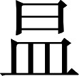

吴书 · 卷三
三嗣主传第三
孙亮，字子明。是孙权的小儿子。孙权的年龄大，而孙亮最小，所以对他特别留意。他姐姐鲁班公主曾经说过皇太子孙和以及孙和母亲的坏话，内心不安；因此顺着孙权的心意，想预先与孙亮搞好关系，就多次称赞全尚的女儿，也就是自己丈夫全琮的侄孙女，劝孙权为孙亮娶做妻子。
赤乌十三年，和废；权遂立亮为太子，以全氏为妃〖4〗。
赤乌十三年（公元 250），皇太子孙和被废黜；孙权立孙亮为太子，以全尚的女儿为太子妃。
注释
注释 〖4〗
全氏：传见本书卷五十。
太元元年夏，亮母潘氏立为皇后。
冬，权寝疾，征大将军诸葛恪为太子太傅，会稽太守滕胤为太常〖5〗：并受诏辅太子。
太元元年（公元251）夏，孙亮的生母潘氏被立为皇后。冬天，孙权卧病在床，征召大将军诸葛恪为太子太傅，会稽郡太守滕胤为太常：一同接受诏命辅佐太子。
注释
注释 〖5〗
滕胤（？—公元 256）：传见本书卷六十四。
明年四月，权薨。太子即尊号〖6〗，大赦，改元。是岁，于魏嘉平四年也。
第二年四月，孙权去世，太子孙亮即皇帝位，宣布大赦，改换年号。这一年，是魏帝曹芳嘉平四年。
注释
注释 〖6〗
即尊号：称帝。孙亮称帝在四月二十八日丁酉，见本书卷六十四《诸葛恪传》。
建兴元年（公元 252）闰四月，任命诸葛恪为皇帝的太傅，滕胤为卫将军兼管尚书台公务，上大将军吕岱为大司马；文武官员在职者都晋升爵位颁发赏赐，闲散官员则提高等级。
冬十月，太傅诸葛恪率领大军阻断巢湖，在东兴修筑城堡；让将军全端据守东城堡，都尉留略据守西城堡。十二月初一日丙申，狂风大作，雷电交加。魏朝派将军诸葛诞、胡遵等出动步兵、骑兵七万人围攻东兴，另外又派将军王昶进攻南郡，毌丘俭袭击武昌。当月十九日甲寅，诸葛恪亲率大军迎战来敌。二十三日戊午，大军到达东兴，与魏军激战；把对方打得大败而逃，斩杀魏国将军韩综、桓嘉等。这一月，雷雨不断。突然的雷击使武昌皇宫的南面正门起火烧毁，重新修复正门；雷击又使门内的殿堂起火烧毁。
注释
注释 〖5〗
巢湖：湖名。即今安徽的巢湖。
注释 〖6〗
东兴：地名。在今安徽含山县西南。即孙吴军事要地濡须坞所在地。诸葛恪为了加强濡须坞的防御作用，在濡须水东岸的濡须山上修筑城堡，名叫东城；又在濡须水西岸的七宝山上筑城堡，名叫西城。东城又称东关，西城又称西关。
注释 〖7〗
全端：事见本书卷五十二《顾雍传附顾谭传》。
注释 〖8〗
留略：事见本书卷六十四《孙峻传》裴注引《吴书》。
注释 〖9〗
诸葛诞（？—公元 258）：传见本书卷二十八。胡遵：事见本书卷二十八《钟会传》裴注引《晋诸公赞》。
注释 〖10〗
毌（guàn）丘俭（？—公元 255）：传见本书卷二十八。
注释 〖11〗
甲寅：旧历十九日。
注释 〖12〗
戊午：旧历二十三日。
注释 〖13〗
天灾：上天降临大火灾。实际上是雷击引起大火。端门：皇宫南面的正门。
建兴二年（公元 253）春正月初一日丙寅，立皇后全氏，宣布大赦。初五日庚午，王昶等人率军撤退。二月，大军从东兴凯旋而归，大行封赏。三月，诸葛恪又领兵讨伐魏国。
夏四月，围新城〖3〗。大疫，兵卒死者太半。
夏四月，诸葛恪挥兵包围合肥新城。由于传染病大流行，士兵死亡了一大半。
注释
注释 〖3〗
新城：城名。即合肥新城。在今安徽合肥市西北。
秋八月，恪引军还。
秋八月，诸葛恪引军退回。
十一月，有大鸟五，现于春申〖6〗。明年改元。
十一月，有五只大鸟出现在春申。为此改换明年的年号。
注释
注释 〖6〗
春申：地名。在今江苏苏州市。
五凤元年夏，大水。
五凤元年（公元254）夏天，出现大洪水。
秋，吴侯英，谋杀峻〖1〗；觉，英自杀。
秋天，吴侯孙英谋杀孙峻；事情发觉后，孙英自杀。
注释
注释 〖1〗
英：即孙英（？—公元 254）。事见本书卷五十九《孙登传》。
五凤二年（公元 255）春正月，魏国镇东大将军毌丘俭、前将军文钦，带领淮南的兵马向西进攻本国，与本国的大军在乐嘉激战。闰正月初九日壬辰，孙峻会同骠骑将军吕据、左将军留赞，率军袭击魏国淮南的中心城市寿春；大军到达东兴时，听说文钦等人失败。十九日壬寅，大军推进到橐皋，文钦来向孙峻投降，淮南魏国叛军的残部有几万人南下投奔孙吴。魏军大将诸葛诞攻入寿春，孙峻领兵撤退。二月，孙峻与魏国将军曹珍在高亭遭遇，双方展开激战，曹珍战败。但是吴将留赞却被诸葛诞的部将蒋班击败于菰陂，留赞和将军孙楞、蒋修等都被杀死。三月，孙峻派镇南将军朱异袭击安丰，未能得手。
注释
注释 〖1〗
二年：五凤二年（公元 255）。
注释 〖2〗
镇东大将军：官名。领兵征伐。主要活动区域在淮南。
注释 〖3〗
乐嘉：地名。在今河南周口市东南。当时毌丘俭举兵反抗曹魏的执政大臣司马师，与司马师的军队在乐嘉激战，结果失败被杀，文钦投奔孙吴。
注释 〖4〗
壬辰：旧历初九日。
注释 〖5〗
留赞（？—公元 255）：传见本书卷六十四《孙峻传》裴注引《吴书》。
注释 〖6〗
壬寅：旧历十九日。
注释 〖7〗
橐（tuó）皋：地名。在今安徽巢湖市西北。
注释 〖8〗
高亭：地名。在今安徽巢湖市西北。
注释 〖9〗
菰（gū）陂：陂塘名。在今安徽巢湖市西北。
注释 〖10〗
镇南将军：官名。领兵征伐。安丰：淮河古津渡名。在今安徽霍丘县西北。
秋七月，将军孙仪、张怡、林恂等，谋杀孙峻；事情败露，孙仪自杀，林恂被依法处死。阳羡县的离里山有大石头自己立起来。孙吴朝廷派卫尉冯朝，修筑广陵城池。又任命将军吴穰为广陵郡太守，留略为东海郡太守。这一年，出现大旱。
十二月，作太庙。以冯朝为监军使者〖15〗，督徐州诸军事。民饥，军士怨叛。
十二月，修建太庙。朝廷任命冯朝为监军使者，指挥徐州各路军队。民间出现饥荒，士兵由于内心怨恨而纷纷叛逃。
注释
注释 〖15〗
监军使者：官名。受皇帝命令监督军队。
八月，先遣钦及骠骑吕据、车骑刘纂、镇南朱异、前将军唐咨军，自江都入淮、泗。
八月，孙峻先派文钦和骠骑将军吕据、车骑将军刘纂、镇南将军朱异、前将军唐咨等，率军由江都进入淮水、泗水流域。
九月十四日丁亥，孙峻去世。临终前委任堂弟偏将军孙綝为侍中、武卫将军，指挥京城内外的所有军队。又下令召回吕据等人的兵马。吕据听说孙綝接替孙峻，大怒。十六日己丑，大司马吕岱去世。十九日壬辰，金星接触到斗宿。吕据、文钦、唐咨等人上表，举荐卫将军滕胤为丞相；孙綝不予采纳。三十日癸卯，孙綝改任滕胤为大司马，接替吕岱驻守武昌。吕据领兵回朝，想讨伐孙綝。孙綝派使者带着朝廷诏书劝告文钦、唐咨等将，让他们攻打吕据。
冬十月初四日丁未，孙綝又派孙宪、丁奉、施宽等将，带领水军在江都迎击吕据；另外部署将军刘丞指挥步兵、骑兵进攻还在京城建业的滕胤。滕胤反抗失败而被杀。初六日己酉，宣布大赦，改换年号。初八日辛亥，在新州擒获吕据。十一月，朝廷任命孙綝为大将军，授予节杖，封永宁侯。孙宪与将军王惇，谋杀孙綝；被发觉，孙綝处死王惇，逼迫孙宪自杀。十二月，孙綝派五官中郎将刁玄，到蜀国通报吴朝内部发生的变乱。
太平二年（公元 257）春二月，初三日甲寅，天降大雨，雷电交加。初四日乙卯，降雪，气候严寒。分长沙郡东部设湘东郡，西部设衡阳郡；又分会稽郡东部设临海郡；豫章郡东部设临川郡。
夏四月，皇帝孙亮登上皇宫正殿，宣布大赦，开始亲自处理政事。对于孙綝所呈上的表章奏议，孙亮发出许多询问。孙亮又区分选择了士兵的子弟中年龄在十八岁以下十五岁以上者，得到三千多人；又挑出大将子弟中年轻而有勇气力量者充当这批小兵的指挥官。孙亮说：“我建立这支军队，想和他们一起成长。”每天都在皇宫的园林中训练。五月，魏国征东大将军诸葛诞，指挥淮南的军队据守寿春城，派将军朱成来向吴国称臣并呈送表章；又送儿子诸葛靓、长史吴纲、各牙门将的子弟，来做人质。六月，朝廷派文钦、唐咨、全端等将，统领步兵、骑兵三万人援救诸葛诞。朱异从虎林出兵袭击夏口，夏口战区的指挥官孙壹投奔到魏国。
注释
注释 〖6〗
科：区分选择。兵子弟：孙吴为保障兵源，曾实行世袭兵制。专门承担兵役的民户叫做兵户，兵户的子弟长大后也从军当兵。因此，孙亮从士兵的子弟中选取对象组成军队，准备培养成自己的亲兵。这一行动引起孙綝的疑虑，成为孙綝废黜孙亮的起因之一。
注释 〖7〗
征东大将军：官名。领兵征伐。主要活动区域在淮南。当时官制，高级将领中有征东、征南、征西、征北将军，合称“四征”；其下有镇东、镇南、镇西、镇北将军，合称“四镇”。如果任职者资历深，则在将军之前加“大”字。“四征”、“四镇”之下，还有类似的“四安”、“四平”。
注释 〖8〗
牙门：官名。即牙门将军的简称。领兵征伐。质：人质。
注释 〖9〗
夏口督：官名。夏口战区的军事指挥官。孙壹（？—公元259）：事见本书卷五十一《孙奂传》。
裴注
裴注 ﹝一﹞
《吴历》曰：“亮数出中书，视孙权旧事。问左右侍臣：‘先帝数有特制；今大将问事，但令我书“可”邪！’亮后出西苑，方食生梅；使黄门至中藏取蜜渍梅，蜜中有鼠矢。召问藏吏，藏吏叩头。亮问吏曰：‘黄门从汝求蜜邪？’吏曰：‘向求，实不敢与。’黄门不服。侍中刁玄、张邠启：‘黄门、藏吏辞语不同，请付狱推尽。’亮曰：‘此易知耳！’令破鼠矢，矢里燥。亮大笑谓玄、邠曰：‘若矢先在蜜中，中外当俱湿；今外湿里燥，必是黄门所为！’黄门首服，左右莫不惊悚。”
《江表传》曰：“亮使黄门以银碗并盖，就中藏吏取交州所献甘蔗饧。黄门先恨藏吏，以鼠矢投饧中；启言藏吏不谨。亮呼吏持饧器入，问曰：‘此器既盖之，且有掩覆，无缘有此；黄门将有恨于汝邪？’吏叩头曰：‘尝从某求宫中莞席；宫席有数，不敢与。’亮曰：‘必是此也！’覆问黄门，具首伏。即于目前加髡鞭，斥付外署。”
臣松之以为：鼠矢新者，亦表里皆湿；黄门取新矢，则无以得其奸也。缘遇燥矢，故成亮之慧。然犹谓《吴历》此言，不如《江表传》为实也。
秋七月，孙綝又亲自率军援救寿春，途中在镬里停留。朱异从夏口赶到；孙綝派他为前军指挥官，与丁奉等人带领五万穿盔甲的战士前去解除寿春的包围。八月，会稽郡南部有人造反，杀死都尉。鄱阳、新都两郡的百姓也发动叛乱，朝廷派廷尉丁密、步兵校尉郑胄、将军钟离牧，带兵去讨伐。朱异因为士兵缺乏粮食而退兵，孙綝勃然发怒。九月初一日己巳，在镬里把朱异处死。初三日辛未，孙綝从镬里回建业。十六日甲申，宣布大赦。
十一月，全绪的儿子全祎、全仪，带着母亲投奔魏国。十二月，全端、全怿等人，从寿春城中跑出去向魏军统帅司马昭投降。
三年春正月〖1〗，诸葛诞杀文钦。三月，司马文王克寿春；诞及左右战死，将吏以下皆降。
太平三年（公元 258）春正月，诸葛诞杀死文钦。三月，司马昭攻下寿春城；诸葛诞和左右随从全部战死，将领和办事官员都投降。
注释
注释 〖1〗
三年：太平三年（公元 258）。
秋七月，封故齐王奋，为章安侯。诏州郡伐宫材〖2〗。自八月，沉阴不雨四十余日。
秋七月，封从前的齐王孙奋为章安侯。下诏命各州郡为修建皇宫砍伐木材。从八月起，天色阴暗但又不下雨，持续了四十多天。
注释
注释 〖2〗
宫材：修建皇宫的木材。
孙亮因为孙綝专权放肆，与太常全尚、将军刘丞，密谋诛杀孙綝。九月二十六日戊午，孙綝出兵攻取全尚，又派弟弟孙恩带兵在苍龙门外袭杀刘丞；然后召集朝廷大臣到皇宫门前聚会，宣布废黜孙亮为会稽王。这一年孙亮十六岁。
孙休字子烈。权第六子。年十三，从中书郎射慈、郎中盛冲受学。
孙休，字子烈。是孙权的第六个儿子。十三岁时，跟随中书郎射慈、郎中盛冲学习。
太元二年正月，封琅邪王，居虎林。四月，权薨，休弟亮承统。诸葛恪秉政，不欲诸王在滨江兵马之地，徙休于丹杨郡。太守李衡，数以事侵休；休上书乞徙他郡，诏徙会稽。
太元二年（公元 252）正月，被封为琅邪王，住在虎林。当年四月，孙权去世，孙休的弟弟孙亮继承帝位。执政的诸葛恪，不想让各位亲王住在沿长江的军事要地，于是把孙休转移到丹杨郡居住。而丹杨郡的太守李衡，多次因事欺凌孙休；孙休就上书朝廷请求迁往其他郡，孙亮下诏同意他迁往会稽郡。
他在会稽住了几年后，梦见自己乘龙飞上青天，回头又看不见龙尾巴，醒了之后很感奇怪。孙亮被废黜，当月二十七日己未，孙綝派宗正卿孙楷与中书郎董朝一起去迎接孙休。孙休一开始听到消息，心里还有怀疑；孙楷、董朝详细叙述了孙綝等人之所以来迎接他的本意：停留一天两夜之后，孙休才随二人出发前往京城。
十月十七日戊寅，孙休来到曲阿县。有一位老翁拦住他跪下叩头说：“事情拖久了就会有变故产生，天下人民仰慕着您；希望陛下加速前进！”孙休认为他说得很对，当天就赶到了距京城不远的布塞亭。这时，孙綝派武卫将军孙恩，代行丞相的职权，带领朝廷百官用皇帝的礼仪专车队在永昌亭迎接；又修筑临时皇宫，以军用帐篷搭成简便殿堂，在里面安放皇帝的御座。
十八日己卯，孙休到达永昌亭，望见简便殿堂后即止步；让孙楷上前先与孙恩相见。孙楷返回后，孙休才乘车前进；百官在旁边两次跪拜，称臣迎接。孙休下车进入简便殿堂，表示谦虚，而不就御座，在东边的厢房坐下。户曹尚书上前，到台阶下担任司仪官，代理丞相孙恩献上皇帝的玉玺、令符。孙休推让了三次，群臣请求了三次。孙休这才说：“将相诸侯，都推举寡人，寡人怎么敢不承受玉玺、令符啊！”于是群臣依次序奉陪作先导，在朝廷百官的就位陪同下，孙休登上皇帝礼仪专车向京城建业前进。孙綝带领一千士兵，到京城的郊外半路上迎接，在路旁跪拜行礼；孙休也下车行跪拜礼作回答。
即日，御正殿；大赦，改元。是岁，于魏甘露三年也。
当天，孙休进入皇宫登上正殿；宣布大赦，改换年号。这一年，是魏帝曹髦甘露三年（公元258）。
永安元年（公元258）冬十月二十一日壬午，孙休下诏说：“褒扬有德者和奖赏有功者，是古今遵从的准则：现在任命大将军孙綝为丞相，兼荆州牧，封地增加为五县；武卫将军孙恩为御史大夫，兼卫将军、中军督，封为县侯；威远将军孙据为右将军，封为县侯；偏将军孙幹为杂号将军，封为亭侯；长水校尉张布在过去辅导朕非常勤劳，现在任命他为辅义将军，封永康侯；董朝亲自前来会稽郡迎接朕，可封为乡侯。”
又下诏说：“丹杨郡太守李衡，因为顾忌以往做事得罪朕，自己主动在有关部门拘禁等候处理。从前管仲追随公子纠时曾放箭射中齐桓公的衣带钩，披接受晋献公命令后曾用刀割下重耳的衣袖：在某位君主手下当臣僚时自然要为这位君主效力。现在遣送李衡回郡复职，不要让他再怀疑自己。”
二十八日己丑，孙休下诏封孙皓为乌程侯，孙皓的弟弟孙德为钱唐侯，另一弟弟孙谦为永安侯。
注释
注释 〖6〗
射钩：春秋时齐国的管仲最初追随公子纠。公子纠与小白争夺国君位置，管仲领兵袭击小白，射中其衣带钩。后小白继位为桓公，不计前嫌，重用管仲。事见《史记》卷三十《齐太公世家》。斩袪（qū）：割断衣袖。前 655 年，晋国发生内乱，晋献公派一个叫做披的宦官杀儿子重耳。重耳翻墙逃走，披只割下其衣袖。后来重耳回国继位为文公，不杀披，披帮助他逃脱一场被袭杀的危险。事见《左传》僖公五年。
注释 〖7〗
己丑：旧历二十八日。
裴注
裴注 ﹝一﹞
《襄阳记》曰：“衡字叔平。本襄阳卒家子也。汉末入吴，为武昌庶民。闻羊衜有人物之鉴，往干之。衜曰：‘多事之世，尚书剧曹郎才也。’是时校事吕壹，操弄权柄；大臣畏逼，莫有敢言。衜曰：‘非李衡无能困之者！’遂共荐为郎。权引见，衡口陈壹奸短数千言，权有愧色。数月，壹被诛，而衡大见显擢。后尝为诸葛恪司马，干恪府事。恪被诛，求为丹杨太守。时孙休在郡治，衡数以法绳之。妻习氏，每谏衡，衡不从。会休立，衡忧惧，谓妻曰：‘不用卿言，以至于此！’遂欲奔魏。妻曰：‘不可！君本庶民耳。先帝相拔过重，既数作无礼；而复逆自猜嫌，逃叛求活：以此北归，何面见中国人乎？’衡曰：‘计何所出？’妻曰：‘琅邪王，素好善慕名，方欲自显于天下；终不以私嫌杀君，明矣。可自囚诣狱，表列前失，显求受罪。如此，乃当逆见优饶，非但直活而已。’衡从之，果得无患；又加威远将军，授以棨戟。衡每欲治家，妻辄不听；后密遣客十人，于武陵龙阳汜洲上，作宅，种甘橘千株。临死，敕儿曰：‘汝母恶我治家，故穷如是！然吾州里，有千头木奴；不责汝衣食，岁上一匹绢：亦可足用耳。’衡亡后二十余日，儿以白母。母曰：‘此当是种甘橘也！汝家失十户客来七八年，必汝父遣为宅。汝父恒称太史公言：“江陵千树橘，当封君家。”吾答曰：“且人患无德义，不患不富；若贵而能贫，方好耳：用此何为！”’吴末，衡甘橘成；岁得绢数千匹，家道殷足。晋咸康中，其宅址、枯树犹在。”
裴注 ﹝二﹞
《江表传》曰：“群臣奏立皇后、太子，诏曰：‘朕以寡德，奉承洪业；莅事日浅，恩泽未敷。加后妃之号、嗣子之位，非所急也！’有司又固请，休谦虚不许。”
十一月初三日甲午，大旋风多次出现，连日来大雾弥漫。孙綝一家五兄弟封侯，又都负责统领京城禁卫军，权力压倒了皇帝；他们有所呈奏，孙休都恭敬同意而不反对：于是他们更加放肆。孙休怕他们制造变故，所以多次给他们颁发赏赐。
初五日丙申，孙休下诏说：“大将军孙綝忠诚发自内心，首先提出废旧立新的大计以安定天下；宫廷内外的重要官员，一致赞成他的建议：都为此立下功劳。从前霍光确定废旧立新的计策，朝廷百官都同心支持：比起今天的情况来也不能超过。要赶快依据这之前参与商议、确定大计并将情况报告太庙中先皇帝神灵的官员名单，按照从前的事例，迅速颁布晋升爵位的奖赏。”
注释
注释 〖11〗
丙申：旧历初五日。
注释 〖12〗
卿士：官名。商末、西周、春秋时中央王朝的辅政官员。这里指朝廷重要官员。内外：宫内宫外。两汉以来中央官员有内朝、外朝之分。内朝官指经常在皇宫内侍从皇帝并协助决策的亲近官员，如大将军、侍中、尚书台官员等。外朝官指以丞相或三公为首的行政官员，其办公府署均在皇宫之外。
注释 〖13〗
霍光（？—前 68）：字子孟。河东郡平阳（今山西临汾市西南）人。西汉昭帝时任大司马、大将军，封博陆侯，执掌朝政。昭帝死，先迎立昌邑王刘贺为帝，不久废刘贺，改立宣帝刘询。前后执政二十年，减轻民众负担，有利生产发展。传见《汉书》卷六十八。
注释 〖14〗
亟（jí）：赶快。按：依照。定策：指作出废黜孙亮改立孙休的决策。告庙：禀告宗庙中供奉的祖先。
注释 〖15〗
故事：过去的事例。
初七日戊戌，又下诏说：“大将军孙綝负责指挥京城内外的所有军队，事务繁重；现在让卫将军、御史大夫孙恩加任侍中官职，与大将军分着审阅各种机要文书。”
二十一日壬子，孙休下诏说：“现今专门充当官府杂役的人家，五个男丁就有三个同时重复在服役：父亲和哥哥在京都，儿子和弟弟在郡县政府充当杂役；既要交米去纳税，军队出动还要从军当劳工；以至于家中的事情完全没有人管理照看。朕非常怜悯他们！朕现在决定，这种家庭中五个男丁有三个在服劳役者，任随他们父亲或哥哥选择谁该留下，可以留下一人；这个人免交米税，军队出动时也不从军当劳工。”又说：“各位武将文官凡在永昌亭站队迎接朕的，都提升官位一级。”
顷之，休闻綝逆谋，阴与张布图计。十二月，戊辰腊〖24〗，百僚朝贺，公卿升殿；诏武士缚綝，即日伏诛。
没过多久，孙休听说孙綝有反逆的阴谋，暗中与张布商议对策。十二月初八日戊辰举行冬季的腊祭，百官进宫朝贺，公卿登上殿堂；孙休下诏让侍从武士捆住孙綝，当天就处死。
注释
注释 〖24〗
戊辰：旧历初八日。腊：冬季举行的一种盛大祭祀。各王朝所定的时间有所不同。孙吴定在十二月的第一个辰日。
初九日己巳，孙休下诏，因为左将军张布诛讨奸臣孙綝有功，让张布加任中军督；封张布的弟弟张惇为都亭侯，并配给卫队三百人；张悖的弟弟张恂被任命为校尉。孙休又下诏说：“古代建国，把教育放在首要地位；用这来引导社会矫正人性，为时代培养人才。自从建兴年间以来，政事上变故很多。官员百姓多为眼前利益奔忙，舍本逐末，不遵循古代的正道。如果崇尚的东西不淳厚，就会伤风败俗。现在要依照古时候的制度建立官方学校，设置教授儒家五经的博士教官；而博士要从应召前来的人中考核选取，并给以优待和丰厚俸禄。然后从现有的官府办事员和武将文官的子弟之中，挑选对学习有志趣爱好者，前往学校完成学业；一年考试一次，区分高下，然后提升职位和颁发奖赏；使看到的人为他们的光荣而高兴，风闻的人为他们的声誉而艳羡：以此来使王朝的教化加强，使社会的风俗振兴。”
注释
注释 〖25〗
己巳：旧历初九日。
注释 〖26〗
都亭侯：爵位名。县城附近的亭叫做都亭。以都亭为封地的侯爵即都亭侯，比一般的亭侯要略微优厚。
注释 〖27〗
兵：这里指个人卫队。
注释 〖28〗
所以：用以。
注释 〖29〗
养器：培养人才。
注释 〖30〗
颇以目前趋务：多为眼前利益奔忙。
注释 〖31〗
尚：崇尚。惇：淳厚。
注释 〖32〗
学官：官方建立的学校。
注释 〖33〗
五经：儒家的五种经典，即《诗经》、《尚书》、《周易》、《礼》、《春秋》。博士：官名。是官方学校的儒学教官。
注释 〖34〗
应选：响应号召参加选拔。这里指应选的人。
注释 〖35〗
业：学业。
注释 〖36〗
差：区分。
二年春正月〖1〗，震电。三月，备九卿官〖2〗。诏曰：“朕以不德，托于王公之上；夙夜战战，忘寝与食。今欲偃武修文〖3〗，以崇大化。推此之道，当由士民之赡，必须农桑。《管子》有言〖4〗：‘仓廪实〖5〗，知礼节；衣食足，知荣辱。’夫一夫不耕，有受其饥；一妇不织，有受其寒。饥寒并至而民不为非者，未之有也！自顷年以来〖6〗，州郡吏民及诸营兵，多违此业；皆浮船长江，贾作上下〖7〗。良田渐废，现谷日少；欲求大定，岂可得哉！亦由租入过重，农人利薄，使之然乎？今欲广开田业，轻其赋税；差科强羸〖8〗，课其田亩〖9〗；务令优均，官私得所。使家给户赡，足相供养；则爱身重命，不犯科法；然后刑罚不用，风俗可整。以群僚之忠贤，若尽心于时；虽太古盛化，未可猝致；汉文升平〖10〗，庶几可及！及之，则臣主俱荣；不及，则损削侵辱：何可从容俯仰而已？诸卿尚书，可共咨度，务取便佳〖11〗。田桑已至，不可后时〖12〗。事定施行，称朕意焉。”
永安二年（公元 259）春正月，雷电交加。三月，把九卿的官员全部配齐。孙休下诏说：“朕没有德泽，却处于王爵、公爵之上的位置；日夜战战兢兢处理政事，忘记了睡觉和进餐。现今朕想停止使用武力大力振兴文教，以推广王朝伟大的教化。然而推究要达到这一目标的途径，应当先使全国军民的生活富裕起来，这就必须发展农副业生产。《管子》中有这样的话：‘仓库充实，人民就懂得礼节；衣食丰足，人民就知道荣辱。’一个农夫不耕种，有人就要挨饿；一个妇女不纺织，有人就要受冻。饥寒交迫而要百姓不为非作歹，这是从来没有的事。自近年以来，各个州郡的官员百姓，包括各地军营的士兵，大多背离农业生产；都乘船在长江中，上游下游跑来跑去忙着做生意买卖。大片良田抛荒，现存粮食日渐减少；像这样而想社会非常安定，岂能办得到啊！这也是由于租税过重，农民从事农业的利润太薄，才使得他们这样吧？现今朕想要广泛开垦土地，减轻农民的赋税；按标准划分各家劳力的强弱，然后据此征收土地的赋税；务必使农民得到优待而且负担平均，公私两利。家家户户生活富裕，足以供家养口；那么人们就会爱惜身体重视生命，不触犯法律；刑罚可以弃置不用，风俗可以整顿振兴。以朝廷百官的忠诚贤能，如果为时代尽心尽力，虽然远古的太平盛世，不一定能猛然赶上和实现；至于像汉文帝时的清明政治，大概是可以达到的啊！达到清明政治则臣僚君主都光荣，否则就要受到敌国的侵削欺辱：大家怎么能漠不关心随从大流而已啊？九卿和尚书，可以共同商量，务必选取确定若干有利的好措施。今年的农桑季节已到，不能延误农时。事情决定之后立即施行，要让朕感到称心如意。”
注释
注释 〖1〗
二年：永安二年（公元 259）。
注释 〖2〗
备：全部设置。
注释 〖3〗
偃：停止。
注释 〖4〗
管子：书名。相传为管仲所撰。原本八十六篇。今本二十四卷。据近人研究，是战国秦汉时人假托之作。
注释 〖5〗
仓廪：仓库。实：充实。
注释 〖6〗
顷年：近年。
注释 〖7〗
贾（gǔ）作：做生意买卖。上下：上游与下游。
注释 〖8〗
差科：按标准划分。 羸（léi）：弱。
注释 〖9〗
课：征收赋税。
注释 〖10〗
汉文：即汉文帝刘恒（前 202—前 157）。西汉皇帝。前 180至前 157 年在位。在位时实行“与民休息”的政策，发展农业生产。又削弱诸王势力，加强中央集权。平时生活俭朴，临死下遗诏禁厚葬。事详《史记》卷十《孝文本纪》、《汉书》卷四《文帝纪》。
注释 〖11〗
便：有利。
注释 〖12〗
后时：耽误农时。
三年春三月〖13〗，西陵言赤乌见。
永安三年（公元260）春三月，西陵县报告有红色的乌鸦出现。
注释
注释 〖13〗
三年：永安三年（公元 260）。
秋天，朝廷采纳都尉严密提出的建议，修建了浦里塘灌溉农田。会稽郡谣传：“会稽王孙亮会回到京城重新当天子。”而孙亮王宫里的侍女，又告发孙亮让巫师祷告祭祀，说了恶毒的话。有关部门把情况上报，孙休下诏贬黜孙亮为候官侯，并遣送他到封地去。孙亮在途中自杀，护送的人被治罪。在会稽郡南部设立建安郡；分出宜都郡一部分土地，设立建平郡。
四年夏五月〖19〗，大雨，水泉涌溢。
永安四年（公元 261）夏五月，连降大雨，河水泉水都上涨涌出。
注释
注释 〖19〗
四年：永安四年（公元 261）。
秋八月，孙休派光禄大夫周奕、石伟巡视各地风俗状况，察看武将文官的清廉贪浊，了解人民的疾苦；再颁布贬黜和提升官员的诏书。九月，布山报告有白龙出现。
注释
注释 〖20〗
光禄大夫：官名。皇帝的政事顾问之一。宗室亲王有丧事时，代表皇帝前往吊唁。
注释 〖21〗
黜陟（zhì）：贬黜和提升。
注释 〖22〗
布山：县名。县治在今广西桂平市西南。
裴注
裴注 ﹝三﹞
《楚国先贤传》曰：“石伟字公操，南郡人。少好学，修节不怠；介然独立，有不可夺之志。举茂才、贤良方正；皆不就。孙休即位，特征伟，累迁至光禄勋。及皓即位，朝政昏乱。伟乃辞老耄痼疾，乞身；就拜光禄大夫。吴平，建威将军王戎，亲诣伟。太康二年，诏曰：‘吴故光禄大夫石伟，秉志清白，皓首不渝；虽处危乱，廉节可纪。年已过迈，不堪远涉；其以伟为议郎，加二千石秩，以终厥世。’伟遂佯狂及盲，不受晋爵。年八十三，太熙元年卒。”
是岁，安吴民陈焦死〖23〗，埋之；六日更生，穿土中出。
这一年，安吴县一个叫陈焦的人死亡，入土埋葬；六天后又活转来，顶破土层爬出坟墓。
注释
注释 〖23〗
安吴：县名。县治在今安徽泾县西南。
秋七月，始新县报告有黄龙出现。八月十三日壬午，天降大雨，雷电交加，河水泉水都上涨涌出。十六日乙酉，孙休立皇后朱氏。十九日戊子，立皇子孙 为皇太子，宣布大赦。
为皇太子，宣布大赦。
为皇太子，宣布大赦。裴注
裴注 ﹝一﹞
《吴录》载休诏曰：“人之有名，以相纪别；长为作字，惮其名耳。礼：名字欲令难犯、易避，五十称伯仲，古或一字。今人竞作好名好字；又令相配，所行不副：此瞽字伯明者也。孤尝哂之。或师友、父兄所作，或自己为；师友尚可，父兄犹非，自为最不谦。孤今为四男做名字：太子名 ，音如湖水湾澳之湾；字
，音如湖水湾澳之湾；字 ，音如迄今之迄。次子名
，音如迄今之迄。次子名 ，音如兕觥之觥；字，
，音如兕觥之觥；字， 音如玄礥首之礥。次子名壾，壾音如草莽之莽；字
音如玄礥首之礥。次子名壾，壾音如草莽之莽；字 ，
， ，音如褒衣下宽大之褒；字，音如有所拥持之拥。此都不与世所用者同，故钞旧文会合作之。夫书八体损益，因事而生。今造此名字，既不相配；又字但一，庶易弃避。其普告天下，使咸闻知。”臣松之以为：《传》称“名以制义，义以出礼；礼以体政，政以正民。是以政成而民听，易则生乱”。斯言之作，岂虚也哉！休欲令难犯，何患无名？而乃造无（况）〔说〕之字，制不典之音；违明诰于前修，垂嗤呆于后代：不亦异乎！是以坟土未干，而妻子夷灭。师服之言，于是乎征矣。
，音如褒衣下宽大之褒；字，音如有所拥持之拥。此都不与世所用者同，故钞旧文会合作之。夫书八体损益，因事而生。今造此名字，既不相配；又字但一，庶易弃避。其普告天下，使咸闻知。”臣松之以为：《传》称“名以制义，义以出礼；礼以体政，政以正民。是以政成而民听，易则生乱”。斯言之作，岂虚也哉！休欲令难犯，何患无名？而乃造无（况）〔说〕之字，制不典之音；违明诰于前修，垂嗤呆于后代：不亦异乎！是以坟土未干，而妻子夷灭。师服之言，于是乎征矣。
，音如湖水湾澳之湾；字，音如迄今之迄。次子名，音如兕觥之觥；字，音如玄礥首之礥。次子名壾，壾音如草莽之莽；字，
音如举物之举。次子名，音如褒衣下宽大之褒；字，音如有所拥持之拥。此都不与世所用者同，故钞旧文会合作之。夫书八体损益，因事而生。今造此名字，既不相配；又字但一，庶易弃避。其普告天下，使咸闻知。”臣松之以为：《传》称“名以制义，义以出礼；礼以体政，政以正民。是以政成而民听，易则生乱”。斯言之作，岂虚也哉！休欲令难犯，何患无名？而乃造无（况）〔说〕之字，制不典之音；违明诰于前修，垂嗤呆于后代：不亦异乎！是以坟土未干，而妻子夷灭。师服之言，于是乎征矣。孙休因为丞相濮阳兴、左将军张布和自己在过去有情谊，所以把政事委托给他们：由张布负责宫廷侍卫，濮阳兴管理军国公务。孙休本人则一心研读典籍，想把各家的著作全部看完。他尤其喜欢射野鸡，春夏之交，经常早出晚归去打猎，只有在这时才放下书本。
孙休想和博士祭酒韦曜、博士盛冲讲论儒家的道理和典籍。而韦、盛二人，素来说话恳切正直：张布害怕他们入宫侍从孙休时，揭发自己暗中的过失，使自己不能再专权；就乱编造理由来阻止。孙休答复他说：“朕涉猎学问，各种书籍大体读遍，所见不少啊。关于英明和昏庸的君主，奸臣贼子；古今贤才愚人成功和失败的事迹：无不阅览。而今让韦曜等人入宫，只是想和他们谈论书籍；并不是要随从他们，重新开始学习。纵然就是随从他们重新开始学习，又有什么损害呢？您只不过害怕韦曜等人给朕说臣下弄奸耍滑的事，因此不想他们入宫嘛；像这一类事情，朕自己已经完全清楚，不必等到韦曜等人说出才了解。这些都没有什么妨害；只不过您心中，特别有所顾忌而已。”
张布得到这封诏书立即表示歉意，他再一次陈述理由，又说这样做害怕会妨碍孙休处理政事。孙休又答复说：“阅读研讨书籍的事，就怕人不喜好；喜好了，是没有什么害处的呀！这并不是什么坏事；而您却认为不适宜，所以朕才说了这些话。政务和学业，其性质不同，彼此不会有妨害的；没有想到您今天在职处理政事，却对朕研习典籍有如此看法：这很不可取啊！”
张布手捧表章跪拜叩头。孙休说：“聊且劝解您一番罢了，何至于叩头谢罪啊！像您所表现出来的忠诚，远近的人都知道。因为有感于往日您的忠诚，所以今天才给您高官显位。《诗经•荡》中说：‘事情无不有开头，但是却很少有结尾。’有结尾确实很难，您要在我们的关系上保持一个好结尾。”
初，休为王时，布为左右将督，素见信爱；及至践阼，厚加宠待，专擅国势，多行无礼。自嫌瑕短，惧曜、冲言之，故尤患忌。休虽解此旨〖23〗，心不能悦；更恐其疑惧，竟如布意，废其讲业，不复使（冲）〔曜〕等入。
当初，孙休还在当王时，张布是侍从左右的卫队长，素来受到信任宠爱；到了孙休登上帝位，对张布更给以宠信厚待，于是张布专擅国家权力，做事多不遵从礼仪。他顾忌到自己的毛病和短处，害怕韦曜、盛冲说出来，所以特别担心忌讳。孙休虽然明白这一情况，心中不高兴；但是更怕张布产生疑惧，所以依从张布的意思，停止讲论典籍的事，不再让韦曜等人进宫。
注释
注释 〖23〗
解此旨：明白这一情况。
永安六年（公元263）夏四月，泉陵县报告有黄龙出现。五月，交阯郡官吏吕兴等人造反，杀死太守孙谞。此前孙谞曾挑选郡中的手工业工匠一千多人，送往京城建业；在察战到来后，百姓怕官府还要抽调工匠，所以吕兴等人就借此在士兵百姓中煽动，招纳少数族起来作乱。
九月，蜀国派使者来通报本国受到魏军的大举进攻。二十日癸未，建业的石头小城发生火灾，烧毁城西南一百八十丈长的城墙。二十一日甲申，孙休派大将军丁奉指挥各军杀向魏国的寿春；将军留平另外赶往南郡去见上游的军事长官施绩，商议从什么方向出兵；又派将军丁封、孙异进攻汉水流域：以上部署都是为了解救蜀国。直到蜀国君主刘禅投降魏国的消息传来，然后才罢兵。交阯郡的太守杀死孙谞之后，派遣使者到魏国，请求派出太守和军队。丞相濮阳兴建议，抽取一万屯田农民为士兵。又分出武陵郡的一部分土地设置天门郡。
注释
注释 〖3〗
癸未：旧历二十日。
注释 〖4〗
甲申：旧历二十一日。
注释 〖5〗
施绩（？—公元 270）：传附本书卷五十六《朱然传》。
注释 〖6〗
如：到。沔中：地区名。指今湖北襄阳市以南的汉水流域。
注释 〖7〗
刘禅（公元 207—271）：传见本书卷三十三。问：消息。
注释 〖8〗
建：建议。屯田：这里指被官方严密组织起来的屯田农民。当时的孙吴和曹魏，都有军屯和民屯两种屯田系统。军屯的耕作者是现役士兵。民屯的耕作者是民户，但是官方以军队组织形式来组织和控制他们，并设有专门的官员来管理。
注释 〖9〗
天门：郡名。治所在今湖南慈利县东北。
裴注
裴注 ﹝一﹞
《吴历》曰：“是岁，青龙现于长沙，白燕现于慈胡，赤雀现于豫章。”
永安七年（公元 264）春正月，宣布大赦。二月，镇军将军陆抗、抚军将军步协、征西将军留平、建平郡太守盛曼，率军围攻蜀国的巴东守将罗宪。
夏四月，魏国的新附督王稚，从海上侵入句章县，抢走该县行政长官、财产和二百多名男女百姓；将军孙越截获一艘敌船，俘虏了三十人。
秋七月，海盗攻破海盐县，杀死司盐校尉骆秀。孙休派中书郎刘川到庐陵郡去征兵。豫章郡的张节等人造反，拥有一万多人马。魏国派将军胡烈，带领步兵、骑兵二万人侵犯西陵县，以援救罗宪；陆抗等人领兵退回。又分出交州一部分土地设置广州。二十四日壬午，宣布大赦。二十五日癸未，孙休去世，终年三十岁，谥为景皇帝。
注释
注释 〖6〗
司盐校尉：官名。负责管理食盐的生产和供应。
注释 〖7〗
胡烈（？—公元 270）：字武玄。安定郡临泾（今甘肃镇原县东南）人。曹魏时任将军，随从灭蜀。西晋时任秦州刺史。传附《晋书》卷五十七《胡奋传》。
注释 〖8〗
壬午：旧历二十四日。
注释 〖9〗
癸未：旧历二十五日。
裴注
裴注 ﹝一﹞
《江表传》曰：“休寝疾，口不能言；乃手书呼丞相濮阳兴入，令子�出，拜之。休把兴臂，而指�以托之。”
裴注 ﹝二﹞
葛洪《抱朴子》曰：“吴景帝时，戍将于广陵掘诸冢，取板以治城，所坏甚多。复发一大冢：内有重阁，户扇皆枢转可开闭；四周为徼道通车，其高可以乘马；又铸铜为人数十枚，长五尺，皆大冠朱衣，执剑列侍灵座；皆刻铜人背后石壁，言殿中将军，或言侍郎、常侍。似公主之冢。破其棺，棺中有人；发已斑白，衣冠鲜明，面体如生人。棺中云母，厚尺许；以白玉璧三十枚，藉尸。兵人辈共举出死人，以倚冢壁。有一玉，长一尺许，形似冬瓜，从死人怀中透出，堕地。两耳及鼻孔中，皆有黄金如枣许大。此则骸骨有假物而不朽之效也。”
孙皓，字元宗。是孙权的孙子，孙和的儿子。他又名彭祖，字皓宗。孙休立为皇帝，封孙皓为乌程侯，遣送他回自己的封地。乌程县的西湖附近一个叫景养的人，为孙皓看相之后说他会大富大贵；他暗自高兴而不敢泄露。
孙休去世，当时蜀国刚刚灭亡，而交阯郡又发生反叛；国内震动恐惧，都盼望立一个年纪较大的君主。左典军万彧从前曾当过乌程县令，与孙皓关系友善；称赞孙皓“具有才能见识而明智果断，是长沙桓王孙策一流的人物，加之又好学，遵守法规制度”；多次向丞相濮阳兴、左将军张布推荐。濮阳兴、张布二人又去劝说孙休的妻子皇太后朱氏，想让她同意孙皓为孙休的继承人。朱氏说：“我是一个寡妇，哪里懂得考虑天下大事？只要吴国不受损害，宗庙祭祀有依靠，也就可以了。”
于是遂迎立皓，时年二十三。改元，大赦。是岁，于魏咸熙元年也。
于是迎立孙皓为皇帝，当时他二十三岁。孙皓即位后改换年号，宣布大赦。这一年，是魏帝曹奂咸熙元年（公元264）。
元兴元年八月，以上大将军施绩、大将军丁奉，为左、右大司马；张布为骠骑将军，加侍中；诸增位班赏，一皆如旧。九月，贬太后为景皇后；追谥父和曰文皇帝，尊母何为太后〖1〗。
元兴元年（公元 264）八月，孙皓任命上大将军施绩、大将军丁奉为左大司马、右大司马；张布为骠骑将军，并加任侍中；其余官员提升官位颁发赏赐，一律都按过去的惯例办理。九月，孙皓把皇太后朱氏贬为景皇后；追谥自己的父亲孙和为文皇帝，尊称母亲何氏为皇太后。十月，封孙休的太子孙 为豫章王，次子孙濊为汝南王，第三子孙壾为梁王，第四子孙，为陈王；又立皇后滕氏。
为豫章王，次子孙濊为汝南王，第三子孙壾为梁王，第四子孙，为陈王；又立皇后滕氏。
为豫章王，次子孙濊为汝南王，第三子孙壾为梁王，第四子孙，为陈王；又立皇后滕氏。 （gōng）。
（gōng）。皓既得志，粗暴骄盈，多忌讳，好酒色；大小失望，兴、布窃悔之。或以谮皓，十一月，诛兴、布。十二月，孙休葬定陵。封后父滕牧为高密侯；﹝二﹞舅何洪等三人，皆列侯。
孙皓得志之后，变得粗鲁凶暴，骄傲自满，忌讳多，喜好酒色；大小官员都深感失望。濮阳兴、张布暗自后悔。有人在孙皓面前说这两人的坏话，十一月，孙皓诛杀了濮阳兴、张布。十二月，孙休遗体安葬在定陵。孙皓封皇后滕氏的父亲滕牧为高密侯，舅父何洪等三人为列侯。
裴注
裴注 ﹝二﹞
《吴历》曰：“牧本名密；避丁密，改名牧。丁密避牧，改名为固。”
这一年，魏国委派的交阯郡太守到达该郡。司马昭被任命为魏朝的相国，派遣从前在寿春城投降魏军的吴将徐绍、孙彧为使者，带着指令和书信，前来陈述政治形势的利害，以劝告孙皓归顺投降。
裴注
裴注 ﹝三﹞
《汉晋春秋》载晋文王与皓书曰：“圣人称有君臣然后有上下礼义，是故大必字小，小必事大；然后上下安服，群生获所。逮至末途，纯德既毁；剿民之命，以争强于天下：违礼顺之至理，则仁者弗由也。方今主上圣明，覆帱无外；仆备位宰辅，属当国重。惟华夏乖殊，方隅圮裂，六十余载；金革亟动，无年不战；暴骸丧元，困悴罔定；每用悼心，坐以待旦。将欲止戈兴仁，为百姓请命；故分命偏师，平定蜀汉；役未经年，全军独克。于时猛将谋夫，朝臣庶士；咸以奉天时之宜，就既征之军，藉吞敌之势；宜遂回旗东指，以临吴境：舟师泛江，顺流而下；陆军南辕，取径四郡；兼成都之械，漕巴汉之粟；然后以中军整旅，三方云会；未及浃辰，可使江表底平，南夏顺轨。然国朝深惟伐蜀之举，虽有静难之功，亦悼蜀民独罹其害；战于绵竹者，自元帅以下，并受斩戮，伏尸蔽地，血流丹野。一之于前，犹追恨不忍，况重之于后乎？是故旋师按甲，思与南邦共全百姓之命。夫料力忖势，度资量险；远考古昔废兴之理，近鉴西蜀安危之效；隆德保祚，去危即顺，屈己以宁四海者，仁哲之高致也。履危偷安，陨德覆祚，而不称于后世者，非智者之所居也。今朝廷遣徐绍、孙彧，献书喻怀。若书御于前，必少留意；回虑革算，结欢弭兵，共为一家。惠矜吴、会，施及中土，岂不泰哉！此昭心之大愿也，敢不承受。若不获命，则普天率土，期于大同；虽重干戈，固不获已也！”
甘露元年（公元 265）三月，孙皓派使者随从徐绍、孙彧前往魏国，向司马昭呈上答复的书信，信中说：“知道您以高于世人的才能，处在执政大臣的职位上；引导国民的工作，做得既勤奋又到家了。朕没有德泽，依次序继承了大位；很想和贤良的您一起，共同拯救社会；然而因为界限阻隔，所以无缘见面，看到您的来信中表现出诚恳而明显的好意，使朕深感亲切依恋。现在特派光禄大夫纪陟、五官中郎将弘璆，前来表明朕深切的心意。”徐绍北上走到濡须，孙皓又把他召回来处死，他的家属也被流放到建安郡：原因是开始时有人报告孙皓，说徐绍曾称颂赞美中原的魏国。
注释
注释 〖1〗
渐导：引导。
注释 〖2〗
嘉意：好意。允著：诚恳而明显。
注释 〖3〗
依依：留恋的样子。
注释 〖4〗
至怀：深切的心意。
注释 〖5〗
白：报告。中国：中原。这里指曹魏。
裴注
裴注 ﹝一﹞
《江表传》曰：“皓书两头言‘白’，称名而不著姓。”
《吴录》曰：“陟字子上，丹杨人。初为中书郎。孙峻使诘南阳王和，令其引分。陟密使令正辞自理，峻怒；陟惧，闭门不出。孙休时，父亮为尚书令，而陟为中书令；每朝会，诏以屏风隔其座。出为豫章太守。”干宝《晋纪》曰：“陟、璆奉使，如魏：入境而问讳，入国而问俗。寿春将王布，示之马射，既而问之曰：‘吴之君子亦能斯乎？’陟曰：‘此军人骑士，肄业所及；士大夫君子，未有为之者矣。’布大惭。既至，魏帝见之，使傧问曰：‘来时吴王何如？’陟对曰：‘来时皇帝临轩，百僚陪位，御膳无恙。’晋文王飨之，百僚毕会。使傧者告曰：‘某者安乐公也，某者匈奴单于也。’陟曰：‘西主失土，为君王所礼，位同三代，莫不感义；匈奴，边塞难羁之国，君王怀之，亲在坐席：此诚威恩远著。’又问：‘吴之戍备几何？’对曰：‘自西陵以至江都，五千七百里！’又问曰：‘道里甚远，难为坚固？’对曰：‘疆界虽远，而其险要必争之地，不过数四；犹人虽有八尺之躯，靡不受患，其护风寒亦数处耳。’文王善之，厚为之礼。”臣松之以为：人有八尺之体，靡不受患；防护风寒，岂唯数处？取譬若此，未足称能。若曰“譬如金城万雉，所急防者四门而已”。方陟此对，不犹愈乎！
《吴录》曰：“皓以诸父与和相连及者，家属皆徙东冶；唯陟以有密旨，特封子孚都亭侯。孚弟瞻，字思远。入晋仕骠骑将军。弘璆，曲阿人。弘咨之孙，权外甥也。璆后至中书令、太子少傅。”
夏四月，蒋陵言甘露降，于是改年，大赦。
夏四月，蒋陵报告有甘露降下，于是改换年号，宣布大赦。
秋七月，皓逼杀景后朱氏。亡不在正殿，于苑中小屋治丧；众知其非疾病，莫不痛切。又送休四子于吴小城〖6〗；寻复追杀大者二人。
秋七月，孙皓逼杀景皇后朱氏。死后遗体不停放在她宫中的正殿，而停放在后花园中一间小屋里来办理丧事；众人知道她并非死于疾病，无不为之感到哀痛悲切。之后孙皓又把孙休的四个儿子送到吴县的小城软禁；紧接着派人去追杀了四兄弟中的大哥、二哥。
注释
注释 〖6〗
吴：县名。县治在今江苏苏州市。
九月，从西陵督步阐表〖7〗，徙都武昌；御史大夫丁固、右将军诸葛靓，镇建业。
九月，孙皓听从西陵督步阐上表提出的建议，迁都到武昌；留御史大夫丁固、右将军诸葛靓镇守建业。
注释
注释 〖7〗
西陵督：官名。西陵战区的指挥官。步阐（？—公元 272）：传附本书卷五十二《步骘传》。表：表奏。
纪陟、弘璆二位使者到达洛阳后，碰上司马昭去世。所以到十一月，才被魏朝遣送回吴国。孙皓到达武昌，又宣布大赦。以零陵郡南部建立始安郡，桂阳郡南部建立始兴郡。十二月，晋王接受魏帝曹奂的禅让建立新王朝。
丁忠劝孙皓说：“北方现在没有布置防守和作战的设施，他们的弋阳郡很容易攻取。”孙皓询问群臣意见，镇西大将军陆凯说：“军队，要到不得已的时候才能使用啊。况且三国鼎立以来，相互攻杀，没有一年安宁的日子。而今强敌吞并了巴蜀，具有双倍土地的实力；却在这时派使者来请求和好亲善，想停止战争，这绝不能认为是他们来向我们求援。现在敌人形势正处于强盛时期，而想侥幸取得胜利，为臣实在看不到这样做有什么好处啊。”车骑将军刘纂却说：“天生有金、木、水、火、土五种物质，金属的主要用途就是制造武器，谁又能去除军队呢？使用诡诈以称雄，这种现象的出现是有缘由的啊！如果北方有防御上的漏洞，怎么能放过机会呢？应当派出间谍，去侦察具体情况。”孙皓暗中采纳刘纂的话。只是因为蜀国新近灭亡，所以才没有实施行动；但是从此就和晋国断绝了往来。
冬十月，永安县山区的叛贼施但等，聚众数千人，劫持孙皓庶母所生的弟弟永安侯孙谦前往乌程县；取出孙皓父亲孙和陵庙中的仪仗乐队和曲柄伞盖。等到他们到达建业，已经发展到一万多人。丁固、诸葛靓在牛屯迎击；双方展开激战，施但等人败逃。孙谦被抓获，自杀。分出会稽郡一部分土地设置东阳郡；分出吴、丹杨二郡一部分土地设置吴兴郡；又以零陵郡北部为邵陵郡。
注释
注释 〖12〗
永安：县名。县治在今浙江德清县西。
注释 〖13〗
庶弟：庶母所生的弟弟。庶母是父亲的小妾。
注释 〖14〗
鼓吹（chuì）：仪仗乐队。曲盖：一种带曲柄的伞盖。是皇帝的仪仗用品。
注释 〖15〗
逆：迎。牛屯：地名。在今江苏南京市东南。
注释 〖16〗
东阳：郡名。治所在今浙江金华市。
注释 〖17〗
吴兴：郡名。治所在今浙江湖州市西南。
注释 〖18〗
邵陵：郡名。治所在今湖南邵阳市。
裴注
裴注 ﹝二﹞
《吴录》曰：“永安，今武康县也。”
裴注 ﹝三﹞
《汉晋春秋》曰：“初，望气者云：‘荆州有王气破扬州，而建业宫不利。’故皓徙武昌；遣使者发民，掘荆州界大臣名家冢与山冈连者，以厌之。既闻但反，自以为徙（土）〔上〕得计也。使数百人鼓噪入建业，杀但妻子，云‘天子使荆州兵来破扬州贼’，以厌前气。”
裴注 ﹝四﹞
皓诏曰：“古者分土建国，所以褒赏贤能，广树藩屏。秦毁五等为三十六郡；汉室初兴，闿立乃至百王：因事制宜，盖无常数也。今吴郡阳羡、永安、余杭、临水，及丹杨故鄣、安吉、原乡、于潜诸县，地势水流之便，悉注乌程；既宜立郡以镇山越，且以藩卫明陵，奉承大祭：不亦可乎！其亟分此九县，为吴兴郡，治乌程。”
十二月，皓还都建业。卫将军滕牧，留镇武昌。
十二月，孙皓再把都城迁回建业。留卫将军滕牧镇守武昌。
二年春〖1〗，大赦。右丞相万彧，上镇巴丘。
宝鼎二年（公元 267）春，宣布大赦，派右丞相万彧，到长江上游镇守巴丘。
注释
注释 〖1〗
二年：宝鼎二年（公元 267）。
夏六月，起显明宫；﹝一﹞
夏六月，修建显明宫；
裴注
裴注 ﹝一﹞
《太康三年地记》曰：“吴有太初宫，方三百丈，权所起也。昭明宫方五百丈，皓所作也；避晋讳，故曰显明。”
《吴历》云：“显明，在太初之东。”
《江表传》曰：“皓营新宫，二千石以下皆自入山督摄伐木。又破坏诸营，大开园囿；起土山楼观，穷极伎巧：功役之费以亿万计。陆凯固谏，不从。”
冬十二月，皓移居之。
冬十二月，孙皓移居到显明宫内。
是岁，分豫章、庐陵、长沙为安成郡〖2〗。
这一年，分出豫章、庐陵、长沙三郡一部分土地，设置安成郡。
注释
注释 〖2〗
安成：郡名。治所在今江西安福县。
秋九月，皓出东关〖5〗，丁奉至合肥。
秋九月，孙皓带领人马前往东关，丁奉赶到合肥。
注释
注释 〖5〗
东关：城堡名。即东兴的东城。在今安徽含山县西南。
是岁，遣交州刺史刘俊、前部督修则等，入击交阯；为晋将毛炅等所破，皆死，兵散还合浦〖6〗。
这一年，孙皓派交州刺史刘俊、前部督修则等人，进攻交阯郡；结果被晋军将领毛炅等击败，刘俊、修则全部阵亡，士兵分散逃回合浦郡。
注释
注释 〖6〗
合浦：郡名。治所在今广西合浦县东北。
建衡元年春正月，立子瑾为太子，及淮阳、东平王。
建衡元年（公元 269）春正月，立皇子孙瑾为太子，又分封淮阳王、东平王。
冬十月，改换年号，大赦。十一月，左丞相陆凯去世。孙皓派遣监军虞汜、威南将军薛珝、苍梧郡太守陶璜三人取道荆州；监军李勖、督军徐存从建安郡走海路：都在合浦郡会合，前往进攻交阯郡。
建衡二年（公元 270）春，万彧回到建业。李勖因为建安郡的道路不通畅，处死充当先导的将军冯斐，领兵退回。三月，发生自燃性大火烧毁一万多家房屋，烧死七百多人。
夏四月，左大司马施绩去世。皇宫殿堂的警卫将领何定报告说：“现任少府的李勖此前出兵，冤枉杀死冯斐，擅自决定撤军退回。”结果李勖及徐存还有他们的家属都被处死。
秋九月，何定将兵五千人，上夏口猎；都督孙秀奔晋〖8〗。
秋九月，何定带领五千人马说是到上游的夏口打猎；夏口战区的指挥官孙秀受惊而投奔晋国。
注释
注释 〖8〗
都督：这里指夏口战区的都督。孙秀：事见本书卷五十一《孙匡传》。
是岁大赦。
这一年宣布大赦。
建衡三年（公元 271）春正月月末这一天，孙皓带领大批人员出京城前往华里，他的母亲和后妃们都随行；东观令华覈等人坚决劝阻，他才回转皇宫。
注释
注释 〖9〗
三年：建衡三年（公元 271）。晦：旧历每月的最后一天。
注释 〖10〗
华里：地名。在今江苏南京市西南。
注释 〖11〗
东观令：官名。管理国家珍藏的图书文献。华覈（hé）：传见本书卷六十五。
裴注
裴注 ﹝一﹞
《江表传》曰：“初，丹杨刁玄使蜀，得司马徽与刘廙论运命历数事。玄诈增其文以诳国人曰：‘黄旗紫盖，现于东南；终有天下者，荆、扬之君乎？’又得中国降人，言寿春下有童谣曰：‘吴天子当上。’皓闻之，喜曰：‘此天命也！’即载其母、妻、子及后宫数千人，从牛渚陆道西上；云‘青盖入洛阳’，以顺天命。行遇大雪，道途陷坏；兵士被甲持仗，百人共引一车，寒冻殆死。兵人不堪，皆曰：‘若遇敌，便当倒戈耳！’皓闻之，乃还。”
这一年，虞汜、陶璜等人攻破交阯郡，擒获和杀死晋朝委派的郡太守和将领，九真、日南二郡也都重归吴国控制。宣布大赦。分出交阯郡一部分土地设置新昌郡。虞汜等将又攻破扶严河流域，朝廷在这里设置武平郡。孙皓任命武昌战区的军事指挥官范慎为太尉。右司马丁奉、司空孟仁去世。皇家园林西苑中，说是有凤凰聚集，为此而改换明年的年号。
注释
注释 〖12〗
九真：郡名。治所在今越南清化市西北。日南：郡名。治所在今越南洞海市南。
注释 〖13〗
新昌：郡名。在今越南河内市西北。
注释 〖14〗
扶严：河流名。在今越南河内市西北。
注释 〖15〗
武平：郡名。治所在今越南河内市西北。
注释 〖16〗
武昌督：官名。武昌战区的指挥官。太尉：官名。三公之首，主管军事。
注释 〖17〗
西苑：孙吴皇家园林名。
裴注
裴注 ﹝二﹞
《汉晋春秋》曰：“初，霍弋遣杨稷、毛炅等戍，与之誓曰：‘若贼围城，未百日而降者，家属诛；若过百日而城没者，刺史受其罪！’稷等日未满而粮尽，乞降于璜；璜不许，而给粮使守。吴人并谏，璜曰：‘霍弋已死，无能来者；可须其粮尽，然后乃受；使彼来无罪，而我取有义。内训吾民，外怀邻国，不亦可乎！’稷、炅粮尽，救不至，乃纳之。”
《华阳国志》曰：“稷，犍为人。炅，建宁人。稷等城中食尽，死亡者半。将军王约反，降，吴人得入城；获稷、炅，皆囚之。孙皓使送稷下都；稷至合浦，呕血死。晋追赠交州刺史。初，毛炅与吴军战，杀前部督修则。陶璜等以炅壮勇，欲赦之。而则子允，固求杀炅；炅亦不为璜等屈。璜等怒，面缚炅，诘之，曰：‘晋（兵）贼！’炅厉声曰：‘吴狗！何等为贼？’吴人生剖其腹，允割其心肝，骂曰：‘庸复作贼？’炅犹骂不止，曰：‘尚欲斩汝孙皓，汝父何死狗也！’乃斩之。晋武帝闻而哀矜，即诏使炅长子袭爵，余三子皆关内侯。”此与《汉晋春秋》所说不同。
裴注 ﹝三﹞
《吴录》曰：“仁字恭武。江夏人也。本名宗，避皓字，易焉。少从南阳李肃学。其母为作厚褥大被，或问其故。母曰：‘小儿无德致客；学者多贫，故为广被，庶可得与气类接也。’其读书，夙夜不懈；肃奇之，曰：‘卿宰相器也！’初为骠骑将军朱据军吏，将母在营。既不得志，又夜雨屋漏；因起涕泣，以谢其母。母曰：‘但当勉之，何足泣也！’据亦稍知之，除为监池司马。自能结网，手以捕鱼，作鲊寄母。母因以还之，曰：‘汝为鱼官，而以鲊寄我，非避嫌也！’迁吴令。时皆不得将家之官；每得时物，来以寄母，常不先食。”及闻母亡，犯禁委官。语在《权传》。特为减死一等，复使为官，盖优之也。《楚国先贤传》曰：“宗母嗜笋。冬节将至，时笋尚未生。宗入竹林哀叹，而笋为之出，得以供母：皆以为至孝之所致感。累迁光禄勋，遂至公矣。”
凤凰元年（公元 272）秋八月，征召西陵战区的军事指挥官步阐进京。步阐不从命，据守西陵县城投降晋国。孙皓派乐乡战区的军事指挥官陆抗去围攻捉拿步阐，步阐的部下全部投降；步阐和同谋者几十人，都被诛灭三族。宣布大赦。
这一年，右丞相万彧受到孙皓谴责，忧愁而死；其子弟被流放到庐陵郡。何定的奸恶污浊行为被揭露，伏法处死。孙皓因为何定的罪恶与张布类似，追改何定的名为何布。
裴注
裴注 ﹝一﹞
《江表传》曰：“初，皓游华里，彧与丁奉、留平密谋曰：‘此行不急，若至华里不归；社稷事重，不得不自还。’此语颇泄。皓闻知，以彧等旧臣，且以计忍，而阴衔之。后因会，以毒酒饮彧；传酒人，私减之。又饮留平，平觉之；服他药以解，得不死。彧自杀；平忧懑，月余亦死。”
裴注 ﹝二﹞
《江表传》曰：“定，汝南人。本孙权给使也，后出补吏。定佞邪僭媚，自表先帝旧人，求还内侍。皓以为楼下都尉，典知酤籴事。专为威福，而皓信任，委以众事。定为子求少府李勖女，不许。定挟忿，谮勖于皓；皓尺口诛之，焚其尸。定又使诸将，各上好犬；皆千里远求，一犬至直数千匹。御犬率具缨，直钱一万。一犬一兵，养以捕兔，供厨，所获无几。吴人皆归罪于定，而皓以为忠勤，赐爵列侯。”
《吴历》曰：“中书郎奚熙，谮宛陵令贺惠。惠，邵弟也。遣使者徐粲讯治，熙又谮粲顾护，不即决断。皓遣使，就宛陵斩粲；收惠付狱，会赦得免。”
二年春三月〖3〗，以陆抗为大司马。司徒丁固卒。
凤凰二年（公元 273）春三月，任命陆抗为大司马。司徒丁固去世。
注释
注释 〖3〗
二年：凤凰二年（公元 273）。
秋九月，改封淮阳王为鲁王，东平王为齐王；又分封陈留王、章陵王等九个亲王：共有十一个亲王，每个亲王配给三千士兵。宣布大赦。
孙皓的爱妾有时派人到集市里，抢夺百姓的财物；司市中郎将陈声，素来是孙皓的宠臣，他仗恃孙皓的宠待，把孙皓爱妾派到集市去的人绳之以法。爱妾向孙皓哭诉，孙皓勃然大怒；借其他事情用烧红的锯齿切断陈声的头颅，把尸身丢到四望山的下面。
注释
注释 〖4〗
淮阳：王国名。治所在今河南淮阳县。但在东汉章帝章和二年（公元 88）已改称陈国，这里是用旧名。东汉制度，宗室亲王的封地为一郡。如某郡成为封地，则改称为国，太守也改称为相。鲁：郡名。治所在今山东曲阜市。
注释 〖5〗
东平：王国名。治所在今山东东平县西南。齐：王国名。治所在今山东淄博市东。
注释 〖6〗
陈留：郡名。治所在今河南开封市东南。章陵：郡名。治所在今湖北枣阳市东南。以上六个郡、王国，当时全都在西晋的辖境内。所以这种封爵是虚封。
注释 〖7〗
司市中郎将：官名。负责管理集市。
注释 〖8〗
幸：宠爱。
注释 〖9〗
四望：山名。在今江苏南京市西北。
是岁，太尉范慎卒。
这一年，太尉范慎去世。
凤凰三年（公元 274），会稽郡传布妖言，说章安侯孙奋应当做天子。临安郡太守奚熙与会稽郡太守郭诞写信，非议国家政事。郭诞只向朝廷报告了奚熙写的信，却不报告妖言；于是孙皓下令把郭诞送往建安郡的造船工场去做苦工。又派会稽、临海、建安三郡的军事指挥官何熙去逮捕奚熙；奚熙发兵自卫，切断海上通路。不久奚熙的部下杀掉他，把他的头颅割下送到京城建业，诛灭了奚熙的三族。
注释
注释 〖10〗
三年：凤凰三年（公元274）。
注释 〖11〗
妖言：蛊惑人心的谣言。这里指传播妖言。
注释 〖12〗
三郡督：官名。是会稽、临海、建安三个滨海郡的军事指挥官。
注释 〖13〗
部曲：部属。
裴注
裴注 ﹝三﹞
《会稽邵氏家传》曰：“邵畴字温伯。时为诞功曹。诞被收，惶遽无以自明。畴进曰：‘畴今自在，畴之事，明府何忧？’遂诣吏自列，云不白妖言，事由于己，非府君罪。吏上畴辞，皓怒犹盛。畴虑诞卒不免，遂自杀以证之。临亡，置辞曰：‘畴生长边陲，不闲教道；得以门资，厕身本郡；逾越侪类，位极朝右；不能赞扬盛化，养之以福。今妖讹横兴，干国乱纪；畴以噂沓之语，本非事实；虽家诵人咏，不足有虑。天下重器，而匹夫横议；疾其丑声，不忍闻见；欲含垢藏疾，不彰之翰笔；镇躁归静，使之自息。愚心勤勤，每执斯旨；故诞屈其所是，默以见从；此之为愆，实由于畴。谨不敢逃死，归罪有司；唯乞天鉴，特垂清察！’吏收畴丧，得辞以闻。皓乃免诞大刑，送付建安作船。畴亡时，年四十。皓嘉畴节义，诏郡县：图形庙堂。”
秋七月，遣使者二十五人，分至州郡，科出亡叛〖14〗。大司马陆抗卒。
秋七月，孙皓派了二十五位使者，分别前往各州郡，清查那些逃亡的士兵百姓。大司马陆抗去世。
注释
注释 〖14〗
科：清查。亡：逃亡的士兵百姓。
自改年及是岁，连大疫。分郁林为桂林郡〖15〗。
自从改换凤凰的年号起到这一年，连续发生传染病大流行。分出郁林郡的一部分土地设置桂林郡。
注释
注释 〖15〗
桂林：郡名。治所在今广西柳州市东南。
天册元年，吴郡言掘地得银：长一尺，广三分，刻上有年月字。于是大赦，改年。
天册元年（公元275），吴郡报告挖地得到一根银条：长一尺，宽三分，上面刻有年、月的字样。于是宣布大赦，改换年号。
天玺元年（公元276），吴郡报告说：临平湖从汉朝末年起就被草泥淤塞，而今突然通畅。据老年人说，这个湖淤塞，天下就混乱；这个湖通畅，天下就太平。人们又在湖边发现一只石匣子，其中装有一颗小石头：青白色，长四寸，宽二寸多；上面刻有“皇帝”的字样，于是改换年号，宣布大赦。会稽郡太守车浚、湘东郡太守张咏，都交不出人头税的铜钱；孙皓派人就地将其处决，把二人的头颅送到各郡示众。
秋八月，京下战区的指挥官孙楷，投降晋国。鄱阳郡报告说：历陵县境内山上的石头纹理形成文字，共有二十个字：是“楚九州渚，吴九州都；扬州士，作天子；四世治，太平始”。又吴兴郡阳羡山有石头中空，长十多丈，被称为“石室”；当地政府呈上表章说是大祥瑞。孙皓派兼任司徒的董朝、兼任太常的周处，前往阳羡县，在国山之上举行封禅的礼仪。改换明年的年号，宣布大赦，以配合历陵山石上的文字意思。
注释
注释 〖5〗
京下督：官名。京下战区的指挥官。京下在今江苏镇江市一带。孙楷（？—公元 304）：事见本书卷五十一《孙韶传》。
注释 〖6〗
历陵：县名。县治在今江西德安县东北。
注释 〖7〗
周处（？—公元 297）：字子隐。吴兴郡阳羡（今江苏宜兴市）人。先出仕孙吴。吴亡降晋，任御史中丞，敢于弹劾权贵，受到排挤。后任建威将军，阵亡。传见《晋书》卷五十八。
注释 〖8〗
封禅：礼仪名。天子亲自登上泰山，筑土坛祭天，叫做封；下到泰山东南低小的梁父山，扫除一块广场祭地，叫做禅。封禅是改朝换代并且天下太平之后才举行的大典，意在感谢天地神灵的庇佑，向天下显示成就。孙皓把祭祀国山称为封禅，是自我夸大的做法。国山：山名。即离里山。在今江苏宜兴市西南。孙皓封禅国山，曾立碑记述其事。碑文以篆文书写，四十三行，每行二十五字，尚可辨认的还有数百字。碑石现今尚存。
注释 〖9〗
协：配合。
裴注
裴注 ﹝二﹞
《江表传》曰：“历阳县，有石山临水，高百丈；其三十丈所，有七穿骈罗；穿中色黄赤，不与本体相似：俗相传谓之‘石印’。又云‘石印封发，天下当太平’。下有祠屋，巫祝言石印神有三郎。时历阳长表上，言‘石印发’，皓遣使以太牢祭历山。巫言：石印三郎说‘天下方太平’。使者作高梯，上看印文；诈以朱，书石作二十字，还以启皓。皓大喜曰：‘吴当为九州作都、渚乎？从大皇帝逮孤四世矣！太平之主，非孤复谁？’重遣使，以印绶拜三郎为王；又刻石立铭，褒赞灵德，以答休祥。”
天纪元年夏，夏口督孙慎出江夏、汝南〖1〗，烧略居民。
天纪元年（公元 277）夏，夏口战区的军事指挥官孙慎出兵进攻江夏、汝南二郡，烧杀掳掠晋国居民。
注释
注释 〖1〗
汝南：郡名。治所在今河南息县。当时在西晋辖境内。
当初，一个叫做张俶的，父亲是养马驾车的贱民。他诋毁告发了许多人，多次升迁，最后官做到司直中郎将，封侯，很受孙皓的宠爱。这一年他的奸恶情况暴露，伏法处死。
三年夏〖6〗，郭马反。
天纪三年（公元279）夏，郭马举兵造反。
注释
注释 〖6〗
三年：天纪三年（公元 279）。
郭马，本是合浦郡太守修允部下的将领。修允转任桂林郡太守之后，生病，住在广州；先派郭马带了五百士兵前往桂林郡安抚各少数族。修允死后，部下的士兵要分散配给其他将领；而郭马等人是世代在一起的老军人，不喜欢分开。当时孙皓又正在清查落实广州民众的户口；郭马和修允部下的将领何典、王族、吴述、殷兴等人，借此恐吓煽动当地军民，招集人马，攻杀了广州战区的军事指挥官虞授。郭马自称是交、广二州的军事总指挥官，安南将军；又任命殷兴为广州刺史；吴述为南海郡太守。他派何典进攻苍梧郡，王族进攻始兴郡。
八月，孙皓任命军师张悌为丞相，牛渚战区的军事指挥官何植为司徒。执金吾滕循被任命为司空；还没有举行正式任命的仪式，他又转任镇南将军，被授予节杖，兼任广州牧；带领一万军队从东路进攻郭马，与王族在始兴郡遭遇，被阻挡而不能前进。郭马这时杀死吴国委派的南海郡太守刘略，赶走广州刺史徐旗。孙皓又派遣徐陵战区的军事指挥官陶濬，带领七千人马，从西路进攻；还命令交州牧陶璜部署指挥本部和合浦、郁林各郡的军队，与上述东、西两路兵力共同攻击郭马。
这时有鬼目菜生长在工人黄耇的家中：靠着一株枣树往上爬，藤蔓有一丈多长；茎有四寸宽，三分厚。又有买菜生长在工人吴平的家中：高四尺，厚三分，形状像枇杷，上面宽一尺八寸，下面的茎宽五寸；两旁长的叶子呈绿色。东观的官员查阅所收藏的图册，把鬼目菜命名为芝草，买菜命名为平虑草。于是朝廷委任黄耇为侍芝郎，吴平为平虑郎：都发给银质官印青色绶带。
这年冬天，晋国命令镇东大将军司马伷指向涂中；安东将军王浑、扬州刺史周浚指向牛渚；建威将军王戎指向武昌；平南将军胡奋指向夏口；镇南大将军杜预指向江陵；龙骧将军王濬、广武将军唐彬沿长江乘船东下；由太尉贾充出任大都督指挥各军进攻吴国，估量形势抓住要点，务必使全军力量得到充分而适当的发挥。
注释
注释 〖23〗
司马伷（公元 227—283）：字子将。河内郡温县（今河南省温县西）人。司马懿的儿子。曹魏时官至征虏将军。西晋建立，封琅邪王。以镇东大将军参与灭吴战役，接受孙皓的投降。后升任大将军。传见《晋书》卷三十八。涂（chú）中：地区名。即今安徽、江苏境内的滁河流域。
注释 〖24〗
安东将军：官名。领兵征伐。王浑（公元 223—297）：字玄冲。太原郡晋阳（今山西太原市西南）人。初仕曹魏。西晋时以安东将军参与灭吴战役，升征东大将军，封京陵公。后任司徒。其子孙是两晋著名的世家大族。传见《晋书》卷四十二。扬州：州名。指当时西晋的扬州。治所在今安徽寿县。周浚：字开林。汝南郡安成（今河南汝南县东南）人。曹魏时任扬州刺史，封射阳侯。西晋建立，参与灭吴战役，击败孙吴主力。后任安东将军，封成武侯。传见《晋书》卷六十一。
注释 〖25〗
建威将军：官名。领兵征伐。王戎（公元 234—305）：字濬冲。琅邪郡临沂（今山东临沂市西北）人。以建威将军参与灭吴战役，封安丰侯。曾任尚书左仆射、尚书令，负责官员选任，以门第高低为主要选用标准。后任司徒。善于清谈，是玄学的竹林名士之一。性贪财吝啬。传见《晋书》卷四十三。
注释 〖26〗
平南将军：官名。领兵征伐。胡奋：字玄威。安定郡临泾（今甘肃镇原县东南）人。出身将门。参与灭吴战役。后任尚书左仆射，兼镇军大将军。传见《晋书》卷五十七。
注释 〖27〗
镇南大将军：官名。领兵征伐。杜预（公元 222—284）：字元凯。京兆杜陵（今陕西西安市东南）人。西晋初任镇南大将军镇守荆州，主动献计进攻孙吴。以参与灭吴有功，封当阳侯。足智多谋，又擅长儒学。对《春秋》和《左传》有精深研究，撰写著述多种。其中《春秋左氏经传集解》流传至今，收入《十三经注疏》。传见《晋书》卷三十四。
注释 〖28〗
龙骧将军：官名。领兵征伐。王濬（公元 206—286）：字士治。弘农郡湖县（今河南灵宝市西南）人。西晋初任龙骧将军、益州刺史，大造舟船准备伐吴。公元 280 年正月，他率军由成都出发，顺长江而下，击溃孙吴沿江守军。三月，率先攻入建业，迫使孙皓投降。以功升辅国大将军，封襄阳侯。传见《晋书》卷四十二。广武将军：官名。领兵征伐。唐彬（公元 235—294）：字儒宗。鲁国邹（今山东邹城市东南）人。以广武将军参与灭吴战役。有功，升右将军，封上庸侯。后任前将军、雍州刺史。传见《晋书》传四十二。
注释 〖29〗
贾充（公元 217—282）：字公闾。平阳郡襄陵（今山西襄汾县东南）人。初仕曹魏，大力支持司马氏。曾命令亲信杀死反对司马昭的魏帝曹髦，又积极策划取代曹魏。西晋建立，历任太尉等显要职务。公元 280 年，受命为灭吴战役总指挥官，但对灭吴毫无信心，事后几乎被治罪。长于法律，曾主持修订《晋律》。两个女儿分嫁晋武帝司马炎的太子和胞弟。传见《晋书》卷四十。大都督：官名。各路军队的总指挥官。发动大战役时设立，不常置。
注释 〖30〗
中：适中。
陶濬至武昌，闻北军大出，停驻不前。
这时陶濬领兵到达武昌，听说北方军队大举出动，立即停下来不再前往广州。
当初，孙皓每次举行宴会招待群臣，都要让大家喝得沉醉不省人事。他布置黄门郎十人，特别不让他们饮酒；在宴会上侍立两旁整日不动，专门充当观察在座官员过失的举报官。宴会结束之后，各自报告所发现的过失；正眼直看君主，说话错谬等，各种毛病无不举报：过错大的立即处死，过错小的也总是要治罪。孙皓的后宫有妻妾几千人，仍然还在民间不断挑选美女进宫。他又下令把河水引进皇宫，宫女有不合他意的，就杀死丢到河里冲走。有时他要剥下人脸上的皮肤，有时又要挖出人的眼睛。岑昏为人以阴险阿谀而得到重用和宠幸，位列九卿；他喜欢兴修各种工程，民众为此很感痛苦。因此吴国上上下下离心离德，没有人愿意为孙皓尽力；大概也是罪恶积累到了极点，臣民们不再能忍受驱使了。
注释
注释 〖31〗
黄门郎：官名。侍从皇帝，受命办事。
注释 〖32〗
司过：观察过失。
注释 〖33〗
迕视：正眼直看（君主）。
注释 〖34〗
险谀贵幸：以阴险阿谀而得到重用和宠幸。
注释 〖35〗
九列：九卿。
裴注
裴注 ﹝三﹞
吴平后，晋侍中庾峻等，问皓侍中李仁曰：“闻吴主披人面，刖人足，有诸乎？”仁曰：“以告者过也。君子恶居下流，天下之恶皆归焉。盖此事也，若信有之，亦不足怪。昔唐、虞五刑，三代七辟；肉刑之制，未为酷虐。皓为一国之主，秉杀生之柄；罪人陷法，加之以惩：何足多罪！夫受尧诛者，不能无怨；受桀赏者，不能无慕：此人情也。”又问曰：“云归命侯乃恶人横睛逆视，皆凿其眼，有诸乎？”仁曰：“亦无此事，传之者谬耳。《曲礼》曰：视天子由袷以下，视诸侯由颐以下，视大夫由衡，视士则平面，得游目五步之内；视上于衡则傲，下于带则忧，旁则邪。以礼，视瞻高下，不可不慎，况人君乎哉！视人君相迕，是乃礼所谓傲慢；傲慢则无礼，无礼则不臣；不臣则犯罪，犯罪则陷不测矣。正使有之，将有何失？”凡仁所答，峻等皆善之。文多不悉载。
晋军大将王濬、唐彬顺长江而下，所到之处，吴军总是土崩瓦解，没有进行抵抗的；晋军大将杜预斩了吴军江陵战区的指挥官伍延，王浑又杀死吴国丞相张悌、丹杨郡太守沈莹等：一路势如破竹。
注释
注释 〖3〗
江陵督：官名。江陵战区的指挥官。
裴注
裴注 ﹝一﹞
干宝《晋纪》曰：“吴丞相、军师张悌，护军孙震，丹杨太守沈莹，帅众三万济江，围成阳都尉张乔于杨荷桥；众才七千，闭栅自守，举白接告降。吴副军师诸葛靓，欲屠之，悌曰：‘敌在前，不宜先事其小；且杀降不祥。’靓曰：‘此等以救兵未至而力少，故且伪降以缓我；非来伏也。因其无战心而尽坑之，可以成三军之气。若舍之而前，必为后患！’悌不从，抚之而进。与讨吴护军张翰、扬州刺史周浚成阵相对。沈莹领丹杨锐卒刀盾五千，号曰‘青巾兵’，前后屡陷坚阵：于是以驰淮南军，三冲不动；退引，乱。薛胜、蒋班，因其乱而乘之，吴军以次土崩，将帅不能止；张乔又出其后：大败吴军于版桥，获悌、震、莹等。”
《襄阳记》曰：“悌字巨先，襄阳人。少有名理。孙休时为屯骑校尉。魏伐蜀，吴人问悌曰：‘司马氏得政以来，大难屡作；智力虽丰，而百姓未服也。今又竭其资力，远征巴蜀，兵劳民疲而不知恤，败于不暇，何以能济？昔夫差伐齐，非不克胜；所以危亡，不忧其本也，况彼之争地乎？’悌曰：‘不然！曹操虽功盖中夏，威震四海；崇诈仗术，征伐无已：民畏其威，而不怀其德也。丕、叡承之，系以惨虐；内兴宫室，外惧雄豪；东西驰驱，无岁获安：彼之失民，为日久矣！司马懿父子，自握其柄，累有大功；除其烦苛而布其平惠，为之谋主而救其疾：民心归之，亦已久矣！故淮南三叛，而腹心不扰；曹髦之死，四方不动；摧坚敌如折枯，荡异同如反掌；任贤使能，各尽其心：非智勇兼人，孰能如之？其威武张矣，本根固矣，群情服矣，奸计立矣。今蜀，阉宦专朝，国无政令；而玩戎黩武，民劳卒弊；竞于外利，不修守备。彼强弱不同，智算亦胜；因危而伐，殆其克乎？若其不克，不过无功；终无退北之忧，覆军之虑也：何为不可哉！昔楚剑利而秦昭惧，孟明用而晋人忧；彼之得志，故我之大患也！’吴人笑其言，而蜀果降于魏。晋来伐吴，皓使悌督沈莹、诸葛靓，率众三万渡江逆之。至牛渚，沈莹曰：‘晋治水军于蜀，久矣。今倾国大举，万里齐力，必悉益州之众，浮江而下。我上流诸军，无有戒备；名将皆死，幼少当任；恐边江诸城，尽莫能御也。晋之水军，必至于此矣！宜蓄众力，待来一战。若胜之日，江西自清；上方虽坏，可还取之。今渡江逆战，胜不可保；若或摧丧，则大事去矣！’悌曰：‘吴之将亡，贤愚所知；非今日也！吾恐蜀兵来至此，众心必骇惧，不可复整。今宜渡江，可用决战力争：若其败丧，则同死社稷，无所复恨；若其克胜，则北敌奔走，兵势万倍，便当乘威南上，逆之中道，不忧不破也。若如子计，恐行散尽；相与坐待敌到，君臣俱降，无复一人死难者：不亦辱乎！’遂渡江战，吴军大败。诸葛靓与五六百人退走，使过迎悌，悌不肯去。靓自往牵之，谓曰：‘（且夫）天下存亡有大数，岂卿一人所知！如何故自取死为？’悌垂涕曰：‘仲思！今日是我死日也！且我作儿童时，便为卿家丞相所拔；常恐不得其死，负名贤知顾。今以身徇社稷，复何遁邪？莫牵曳之如是！’靓流涕放之，去百余步，已见为晋军所杀。”
《吴录》曰：“悌少知名。及处大任，希合时趣，将护左右。清论讥之。”
《搜神记》曰：“临海松阳人柳荣，从悌至杨府。荣病死船中，二日；时军已上岸，无有埋之者。忽然大呼，言：‘人缚军师！人缚军师！’声激扬，遂活。人问之，荣曰：‘上天，北斗门下，猝见人缚张悌。意中大愕，不觉大呼，言：“何以缚张军师！”门下人怒荣，叱逐使去。荣便去，怖惧，口余声发扬耳。’其日，悌战死。荣至晋元帝时，犹在。”
二月初九日丙寅，孙皓宫中几百亲近人员一齐跪下叩头，请求处死岑昏，孙皓惊惶失措，同意大家的请求。十一日戊辰，陶濬从武昌赶回，当天孙皓就接见他。询问晋国水军是否被遏止，陶濬回答说：“晋军乘坐的益州船只都小；如果现在能给我两万人马，乘坐大船作战，足以击败他们！”于是孙皓命令召集军队，授给陶濬节杖、黄钺。第二天应当出发，当晚，军队的将士就全部逃走。
这时顺流而下的王濬即将到达建业，司马伷、王浑等人的军队也逼近吴国边境。孙皓只好采用光禄勋薛莹、中书令胡冲的主意，分别派使者，向王濬、司马伷、王浑献上投降书，投降书中说：“过去汉朝统治崩溃，全国分裂；我的先辈借助时势，占据江南；在山川的阻隔之下，与魏国发生背离。而今大晋皇朝像龙飞上天一样兴起，德泽覆盖了四海；我生性昏庸愚劣，未能认识清楚天命。以至于现今劳烦出动大军；车辆在路上停宿，从远方推进到长江边。我们全国震动惊惶，苟延残喘于一时；我斗胆凭借大晋天朝，气度的含容宽宏和德泽的光辉伟大。谨派遣私自委任的太常张夔等人，带上我所佩用的印章、绶带，用我自己做人质。请求宽恕所辖的人民，希望能相信和接受，以拯救百姓。”
注释
注释 〖7〗
薛莹（？—公元282）：传附本书卷五十三《薛综传》。中书令：官名。负责军国机要文书的起草和管理。胡冲：事见本书卷六十二《胡综传》。
注释 〖8〗
衡：车辕端部的横木。固定在马、牛背上以牵引车辆。盖：车盖。这里衡盖指车辆。路次：在路上停宿。
注释 〖9〗
假息：延长呼吸。漏刻：漏是古代计时的装置。主要部分是一只铜壶，下部有小漏口。内部注水，水面置浮板，板上立有一支刻有标度的竹箭。水从漏口流出，竹箭的高低位置发生变化，从刻度上可知时间早晚。现今考古工作者已发现多种漏壶实物。这里漏刻比喻短暂的时间。
注释 〖10〗
私署：私自委任。
注释 〖11〗
济：拯救。元元：百姓。
裴注
裴注 ﹝三﹞
《江表传》载：“皓将败，与舅何植书曰：‘昔大皇帝以神武之略，奋三千之卒；割据江南，席卷交、广：开拓洪基，欲祚之万世。至孤末德，嗣守成绪；不能怀集黎元，多为咎阙，以违天度。暗昧之变，反谓之祥；致使南蛮逆乱，征讨未克。闻晋大众，远来临江，庶竭劳瘁，众皆摧退；而张悌不返，丧军过半，孤甚愧怅，于今无聊。得陶濬表云：“武昌以西，并复不守。”不守者，非粮不足，非城不固：兵将背战耳！兵之背战，岂怨兵邪？孤之罪也！天文悬变于上，士民愤叹于下；观此事势，危如累卵；吴祚终讫，何其局哉！天匪亡吴，孤所招也！瞑目黄壤，当复何颜见四帝乎？公其勖勉奇谟，飞笔以闻。’皓又遗群臣书曰：‘孤以不德，忝继先轨；处位历年，政教凶勃。遂令百姓久困涂炭，至使一朝归命有道；社稷倾覆，宗庙无主。惭愧山积，没有余罪。自惟空薄，过偷尊号；才琐质秽，任重王公；故《周易》有折鼎之诫，诗人有彼其之讥。自居宫室，仍抱笃疾；计有不足，思虑失中，多所荒替。边侧小人，因生酷虐；虐毒横流，忠顺被害。暗昧不觉，寻其壅蔽，孤负诸君；事已难图，覆水不可收也。今大晋平治四海，劳心务于擢贤：诚是英俊展节之秋也。管仲极仇，桓公用之；良、平去楚，入为汉臣：舍乱就理，非不忠也。莫以移朝改朔，用损厥志。嘉勖休尚，爱敬动静。夫复何言，投笔而已！’”
三月十五日壬寅，王濬的船队最先到达建业；并接受孙皓的投降，王濬下令解开孙皓自己绑在身上的绳索，焚烧了他带来的棺材，请他与自己相见。
伷以皓致印绶于己，遣使送皓；皓举家西迁，以太康元年五月丁亥集于京邑〖14〗。
司马伷因为孙皓把象征权位的印章、绶带送到自己手上，所以派使者遣送孙皓；孙皓全家随从西迁，在太康元年（公元 280）五月初一日丁亥一齐到达京城洛阳。
注释
注释 〖14〗
丁亥：旧历初一日。京邑：京城。指洛阳。
此前的四月二十八日甲申，晋武帝下诏说：“孙皓在穷途末路时归顺投降，此前朕曾下诏饶他不死；现今他即将到达京城，朕心里还对他有所怜悯。决定赐他归命侯的称号；从优赏给他衣服车辆，田地三十顷；每年供应粮食五千斛，钱五十万，绢五百匹，丝绵五百斤。孙皓的太子孙瑾，任命为中郎；孙皓的其他儿子原来封了王的，都被任命为郎中。”
注释
注释 〖15〗
甲申：旧历二十八日。晋武帝下诏封孙皓为归命侯，《晋书》卷三《武帝纪》记在当年五月二十五日辛亥，与此处的月、日均不同。
注释 〖16〗
斛（hú）：古代容量单位。十斗为一斛。
注释 〖17〗
中郎：官名。郎官的一种，持兵器警卫皇宫殿堂。
裴注
裴注 ﹝五﹞
《搜神记》曰：“吴以草创之国，信不坚固；边屯守将，皆质其妻子，名曰‘保质’。童子少年，以类相与嬉游者，日有十数。永安二年三月，有一异儿，长四尺余，年可六七岁，衣青衣，来从群儿戏。诸儿莫之识也，皆问曰：‘尔谁家小儿，今日忽来？’答曰：‘见尔群戏乐，故来耳。’详而视之，眼有光芒，爚爚外射；诸儿畏之，重问其故。儿乃答曰：‘尔恶我乎？我非人也，乃荧惑星也！将有以告尔：三公锄，司马如。’诸儿大惊，或走告大人，大人驰往观之。儿曰：‘舍尔去乎！’竦身而跃，即以化矣。仰面视之，若引一匹练以登天。大人来者，犹及见焉；飘飘渐高，有顷而没。时吴政峻急，莫敢宣也。后五年而蜀亡，六年而晋兴，至是而吴灭：‘司马如’矣。”干宝《晋纪》曰：“王濬治船于蜀。吾彦取其流7以呈孙皓，曰：‘晋必有攻吴之计，宜增建平兵。建平不下，终不敢渡江。’皓弗从。陆抗之克步阐，皓意张大。乃使尚广筮‘并天下’，遇《同人》之《颐》，对曰：‘吉。庚子岁，青盖当入洛阳。’故皓不修其政，而恒有窥上国之志。是岁也，实在庚子。”
评论说：孙亮在儿童时继承皇位，而没有贤明的大臣辅佐；他的位置被人替代而不能始终保有，是必然的结果。孙休，因为过去的宠爱和恩情，任用濮阳兴、张布；不能提拔进用良才，改弦更张：尽管他有心向善勤奋好学，对于拯救乱世又有什么益处啊？他又使已经被废黜的孙亮死于非命，兄弟之间的情分也太淡薄了！孙皓滥用酷刑，被他处死流放贬黜的人，简直不可计算。因此群臣人人恐惧不安，挨过今天才敢盼望明天，在早晨都无法预料晚上会发生什么灾祸。当时天上的荧惑星，人间的巫师，都交相显示了大晋将要灭吴统一天下的种种征兆，向孙皓作最紧急的警告。从前虞舜、大禹亲自耕种庄稼，具有极度圣明的德泽；都还有时候要和群臣起誓，说是我有过错的话你们应当辅正我；有时候要拜谢别人对自己说的有益言论，常常好像生怕听不到别人的进谏。何况孙皓凶恶顽固，任意施行残暴手段；忠言进谏的被诛杀，阿谀谄媚者受重用；虐待人民，淫糜奢侈到了极点：本来应当腰斩砍头，以向百姓谢罪。结果他既接到饶他不死的诏书，又还受到赐给归命侯称号的宠待；这难道不是大晋天朝宽大无边的恩典，过于优厚的德泽吗！
注释
注释 〖1〗
友于之义：指兄弟之间的情分。《论语•为政》有“友于兄弟”的句子，后来人们即以友于代指兄弟。
注释 〖2〗
禹：姒姓。人称大禹、夏禹、戎禹。传说中古代部落联盟的领袖。奉虞舜之命，治理洪水十三年，获得成功。后继舜为部落联盟的领袖。其子启继承他的位置，建立中国历史上第一个奴隶制国家。事见《史记》卷二《夏本纪》。躬稼：亲自种庄稼。
注释 〖3〗
予违汝弼：我有过错你应当辅正我。这是尧对舜说的话，载《尚书•皋陶谟》。
注释 〖4〗
拜昌言：拜谢（别人对自己说的）有益言论。虞舜指点大禹，大禹“拜昌言”，见《尚书•皋陶谟》。
裴注
裴注 ﹝一﹞
孙盛曰：“夫古之立君，所以司牧群黎；故必仰协乾坤，覆焘万物。若乃淫虐是纵，酷被群生；则天殛之，剿绝其祚：夺其南面之尊，加其独夫之戮。是故汤、武抗钺，不犯不顺之讥；汉高奋剑，而无失节之议。何者？诚四海之酷仇，而人神之所摈故也。况皓罪为逋寇，虐过辛、癸：枭首素旗，犹不足以谢冤魂；洿室荐社，未足以纪暴迹。而乃优以显命，宠锡仍加：岂龚行天罚，伐罪吊民之义乎！是以知僭逆之不惩，而凶酷之莫戒。《诗》云：‘取彼谮人，投畀豺虎。’聊谮犹然，矧僭虐乎？且神旗电扫，兵临伪窟，理穷势迫，然后请命；不赦之罪既彰，三驱之义又塞：极之权道，亦无取焉。”
陆机著《辨亡论》，言吴之所以亡，其上篇曰：“昔汉氏失御，奸臣窃命；祸基京畿，毒遍宇内；皇纲弛紊，王室遂卑。于是群雄蜂骇，义兵四合。吴武烈皇帝，慷慨下国，电发荆南；权略纷纭，忠勇伯世；威稜则夷羿震荡，兵交则丑虏授馘；遂扫清宗祊，蒸禋皇祖。于时云兴之将带州，飙起之师跨邑；哮阚之群风驱，熊罴之族雾集。虽兵以义合，同盟戮力；然皆包藏祸心，阻兵怙乱；或师无谋律，丧威稔寇：忠规武节，未有若此其著者也。武烈既没，长沙桓王逸才命世，弱冠秀发；招揽遗老，与之述业。神兵东驱，奋寡犯众；攻无坚城之将，战无交锋之虏；诛叛柔服而江外底定，饬法修师而威德翕赫；宾礼名贤而张昭为之雄，交御豪俊而周瑜为之杰。彼二君子：皆弘敏而多奇，雅达而聪哲；故同方者以类附，等契者以气集，而江东盖多士矣。将北伐诸华，诛锄干纪；旋皇舆于夷庚，反帝座于紫闼；挟天子以令诸侯，清天步而归旧物。戎车既次，群凶侧目；大业未就，中世而陨。用集我大皇帝：以奇踪袭于逸轨，叡心发乎令图；从政咨于故实，播宪稽乎遗风；而加之以笃固，申之以节俭；畴咨俊茂，好谋善断；束帛旅于丘园，旌命交于途巷。故豪彦寻声而响臻，志士希光而影骛；异人辐辏，猛士如林。于是张昭为师傅；周瑜、陆公、鲁肃、吕蒙之畴，入为腹心，出作股肱；甘宁、凌统、程普、贺齐、朱桓、朱然之徒奋其威，韩当、潘璋、黄盖、蒋钦、周泰之属宣其力；风雅则诸葛瑾、张承、步骘以声名光国；政事则顾雍、潘濬、吕范、吕岱以器任干职；奇伟则虞翻、陆绩、张温、张惇以讽议举正；奉使则赵咨、沈珩以敏达延誉；术数则吴范、赵达以�祥协德；董袭、陈武，杀身以卫主；骆统、刘基，强谏以补过。谋无遗算，举不失策；故遂割据山川，跨制荆、吴，而与天下争衡矣。魏氏尝藉战胜之威，率百万之师；浮邓塞之舟，下汉阴之众。羽楫万计，龙跃顺流；锐骑千旅，虎步原隰。谋臣盈室，武将连衡；喟然有吞江浒之志，一宇宙之气。而周瑜驱我偏师，黜之赤壁；丧旗乱辙，仅而获免，收迹远遁。汉王亦凭帝王之号，率巴、汉之民；乘危骋变，结垒千里；志报关羽之败，图收湘西之地。而我陆公，亦挫之西陵；覆师败绩，困而后济，绝命永安。续以濡须之寇，临川摧锐；蓬笼之战，孑轮不反。由是二邦之将，丧气摧锋，势衂财匮；而吴藐然，坐乘其弊。故魏人请好，汉氏乞盟；遂跻天号，鼎峙而立。西屠庸蜀之郊，北裂淮汉之涘；东苞百越之地，南括群蛮之表。于是讲八代之礼，搜三王之乐；告类上帝，拱揖群后。虎臣毅卒，循江而守；长戟劲铩，望飙而奋。庶尹尽规于上，四民展业于下；化协殊裔，风衍遐圻。乃俾一介行人，抚巡外域；巨象逸骏，扰于外闲；明珠玮宝，辉于内府；珍瑰重迹而至，奇玩应响而赴；�轩骋于南荒，冲�息于朔野；齐民免干戈之患，戎马无晨服之虞：而帝业固矣！大皇既殁，幼主莅朝，奸回肆虐。景皇聿兴，虔修遗宪；政无大阙，守文之良主也。降及归命之初，典刑未灭，故老犹存：大司马陆公以文武熙朝，左丞相陆凯以謇谔尽规；而施绩、范慎以威重显，丁奉、钟离斐以武毅称；孟宗、丁固之徒为公卿，楼玄、贺劭之属掌机事：元首虽病，股肱犹良。爰及末叶，群公既丧。然后黔首有瓦解之志，皇家有土崩之衅；历命应化而微，王师蹑运而发；卒散于阵，民奔于邑；城池无藩篱之固，山川无沟阜之势；非有工输云梯之械，智伯灌激之害，楚子筑室之围，燕人济西之队，军未浃辰而社稷夷矣！虽忠臣孤愤，烈士死节，将奚救哉？夫曹、刘之将，非一世之选；向时之师，无曩日之众；战守之道，抑有前符；险阻之利，俄然未改。而成败贸理，古今诡趣，何哉？彼此之化殊，授任之才异也！”
其下篇曰：“昔三方之王也：魏人据中夏；汉氏有岷、益；吴制荆、扬，而奄交、广。曹氏虽功济诸华；虐亦深矣，其民怨矣。刘公因险饰智；功已薄矣，其俗陋矣。吴桓王基之以武，太祖成之以德；聪明睿达，懿度深远矣。其求贤如不及，恤民如稚子；接士尽盛德之容，亲仁罄丹府之爱。拔吕蒙于戎行，识潘濬于系虏。推诚信士，不恤人之我欺；量能授器，不患权之我逼。执鞭鞠躬，以重陆公之威；悉委武卫，以济周瑜之师。卑宫菲食，以丰功臣之赏；披怀虚己，以纳谟士之算。故鲁肃一面而自托，士燮蒙险而效命。高张公之德而省游田之娱，贤诸葛之言而割情欲之欢；感陆公之规而除刑政之烦，奇刘基之议而作三爵之誓。屏气跼蹐以伺子明之疾，分滋损甘以育凌统之孤；登坛慷慨归鲁肃之功，削投恶言信子瑜之节：是以忠臣竞尽其谋，志士咸得肆力。洪规远略，固不厌夫区区者也；故百官苟合，庶务未遑。初都建业，群臣请备礼秩，天子辞而不许，曰：‘天下其谓朕何！’宫室舆服，盖慊如也。爰及中叶，天人之分既定，百度之缺粗修；虽醲化懿纲，未齿乎上代；抑其体国经民之具，亦足以为政矣。地方几万里，带甲将百万；其野沃，其民练，其财丰，其器利；东负沧海，西阻险塞；长江制其区宇，峻山带其封域：国家之利，未见有弘于兹者矣！借使中才守之以道，善人御之有术；敦率遗宪，勤民谨政；循定策，守常险；则可以长世永年，未有危亡之患。或曰：‘吴、蜀唇齿之国，蜀灭则吴亡，理则然矣！’夫蜀，盖藩援之与国，而非吴人之存亡也。何则？其郊境之接，重山积险，陆无长毂之径；川阨流迅，水有惊波之艰。虽有锐师百万，启行不过千夫；舳舻千里，前驱不过百舰。故刘氏之伐，陆公喻之长蛇：其势然也。昔蜀之初亡，朝臣异谋；或欲积石以险其流，或欲机械以御其变。天子总群议而咨之大司马陆公，陆公以‘四渎，天地之所以节宣其气，固无可遏之理；而机械，则彼我之所共。彼若弃长技以就所屈，即荆、扬而争舟楫之用：是天赞我也。将谨守峡口，以待擒耳’。逮步阐之乱，凭堡城以延强寇，重资币以诱群蛮。于时大邦之众，云翔电发，悬旌江介，筑垒遵渚，襟带要害，以止吴人之西；而巴汉舟师，沿江东下。陆公以偏师三万，北据东坑，深沟高垒，按甲养威；反虏踠迹待戮，而不敢北窥生路；强寇败绩宵遁，丧师大半。分命锐师五千，西御水军；东西同捷，献俘万计。信哉！贤人之谋，岂欺我哉！自是烽燧罕警，封域寡虞。陆公没而潜谋兆，吴衅深而六师骇。夫太康之役，众未盛乎曩日之师；广州之乱，祸有愈乎向时之难。而邦家颠覆，宗庙为墟。呜呼！人之云亡，邦国殄瘁，不其然与？《易》曰‘汤武革命顺乎天’，《玄》曰‘乱不极则治不形’：言帝王之因天时也。古人有言，曰‘天时不如地利’，《易》曰‘王侯设险以守其国’：言为国之恃险也。又曰‘地利不如人和’，‘在德不在险’：言守险之由人也。吴之兴也，参而由焉：孙卿所谓合其参者也。及其亡也，恃险而已：又孙卿所谓舍其参者也。夫四州之氓，非无众也；大江之南，非乏俊也；山川之险，易守也；劲利之器，易用也；先政之业，易循也：功不兴而祸遘者，何哉？所以用之者失也！故先王达经国之长规，审存亡之至数；恭己以安百姓，敦惠以致人和；宽冲以诱俊乂之谋，慈和以给士民之爱。是以其安也，则黎元与之同庆；及其危也，则兆庶与之共患。安，与众同庆，则其危不可得也；危，与下共患，则其难不足恤也。夫然，故能保其社稷，而固其土宇；麦秀无悲殷之思，黍离无愍周之感矣！”